第 1 / 30 页

全国英语六级历年真题
1 / 30
2012 年12 月大学英语六级(CET-6)真题试卷
Part I
Writing
(30 minutes)
Direction: For this part, you are allowed 30 minutes to write an essay entitled Man and
Computer by commenting on the saying, “The real danger is not that the computer will
begin to think like man, but that man will begin to think like the computer.” You should
write at least 150 words but no more than 200 words.
Man and Computer
Part II Reading Comprehension (Skimming and Scanning) (15 minutes)
Directions: In this part, you will have 15 minutes to go over the passage quickly and answer the
questions on Answer Sheet 1. For questions 1-7, choose the best answer from the four
choices marked A), B), C) and D). For questions 8-10, complete the sentences with the
information given in the passage.
Thirst grows for living unplugged
More people are taking breaks from the connected life amid the stillness and quiet of retreats
like the Jesuit Center in Wernersville, Pennsylvania.
About a year ago, I flew to Singapore to join the writer Malcolm Gladwell, the fashion designer
Marc Ecko and the graphic designer Stefan Sagmeister in addressing a group of advertising people
on “Marketing to the Child of Tomorrow.” Soon after I arrived, the chief executive of the agency
that had invited us took me aside. What he was most interested in, he began, was stillness and quiet.
A few months later, I read an interview with the well-known cutting-edge designer Philippe
Starck.
What allowed him to remain so consistently ahead of the curve? “I never read any magazines or
watch TV,” he said, perhaps with a little exaggeration. “Nor do I go to cocktail parties, dinners or
anything like that.” He lived outside conventional ideas, he implied, because “I live alone mostly, in
the middle of nowhere.”
查看 / 复制本页文字
全国英语六级历年真题 1 / 30 2012 年12 月大学英语六级(CET-6)真题试卷 Part I Writing (30 minutes) Direction: For this part, you are allowed 30 minutes to write an essay entitled Man and Computer by commenting on the saying, “The real danger is not that the computer will begin to think like man, but that man will begin to think like the computer.” You should write at least 150 words but no more than 200 words. Man and Computer Part II Reading Comprehension (Skimming and Scanning) (15 minutes) Directions: In this part, you will have 15 minutes to go over the passage quickly and answer the questions on Answer Sheet 1. For questions 1-7, choose the best answer from the four choices marked A), B), C) and D). For questions 8-10, complete the sentences with the information given in the passage. Thirst grows for living unplugged More people are taking breaks from the connected life amid the stillness and quiet of retreats like the Jesuit Center in Wernersville, Pennsylvania. About a year ago, I flew to Singapore to join the writer Malcolm Gladwell, the fashion designer Marc Ecko and the graphic designer Stefan Sagmeister in addressing a group of advertising people on “Marketing to the Child of Tomorrow.” Soon after I arrived, the chief executive of the agency that had invited us took me aside. What he was most interested in, he began, was stillness and quiet. A few months later, I read an interview with the well-known cutting-edge designer Philippe Starck. What allowed him to remain so consistently ahead of the curve? “I never read any magazines or watch TV,” he said, perhaps with a little exaggeration. “Nor do I go to cocktail parties, dinners or anything like that.” He lived outside conventional ideas, he implied, because “I live alone mostly, in the middle of nowhere.”
第 2 / 30 页
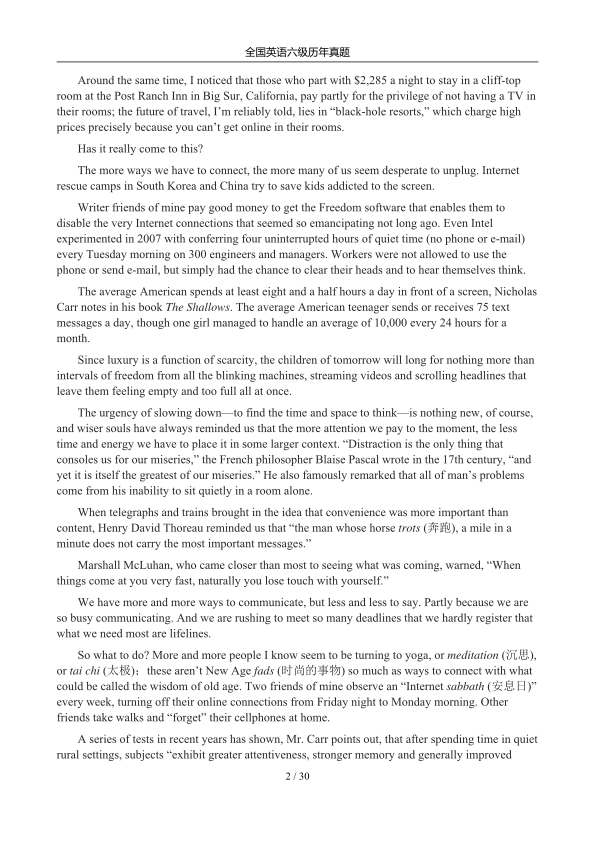
全国英语六级历年真题
2 / 30
Around the same time, I noticed that those who part with $2,285 a night to stay in a cliff-top
room at the Post Ranch Inn in Big Sur, California, pay partly for the privilege of not having a TV in
their rooms; the future of travel, I’m reliably told, lies in “black-hole resorts,” which charge high
prices precisely because you can’t get online in their rooms.
Has it really come to this?
The more ways we have to connect, the more many of us seem desperate to unplug. Internet
rescue camps in South Korea and China try to save kids addicted to the screen.
Writer friends of mine pay good money to get the Freedom software that enables them to
disable the very Internet connections that seemed so emancipating not long ago. Even Intel
experimented in 2007 with conferring four uninterrupted hours of quiet time (no phone or e-mail)
every Tuesday morning on 300 engineers and managers. Workers were not allowed to use the
phone or send e-mail, but simply had the chance to clear their heads and to hear themselves think.
The average American spends at least eight and a half hours a day in front of a screen, Nicholas
Carr notes in his book The Shallows. The average American teenager sends or receives 75 text
messages a day, though one girl managed to handle an average of 10,000 every 24 hours for a
month.
Since luxury is a function of scarcity, the children of tomorrow will long for nothing more than
intervals of freedom from all the blinking machines, streaming videos and scrolling headlines that
leave them feeling empty and too full all at once.
The urgency of slowing down—to find the time and space to think—is nothing new, of course,
and wiser souls have always reminded us that the more attention we pay to the moment, the less
time and energy we have to place it in some larger context. “Distraction is the only thing that
consoles us for our miseries,” the French philosopher Blaise Pascal wrote in the 17th century, “and
yet it is itself the greatest of our miseries.” He also famously remarked that all of man’s problems
come from his inability to sit quietly in a room alone.
When telegraphs and trains brought in the idea that convenience was more important than
content, Henry David Thoreau reminded us that “the man whose horse trots (奔跑), a mile in a
minute does not carry the most important messages.”
Marshall McLuhan, who came closer than most to seeing what was coming, warned, “When
things come at you very fast, naturally you lose touch with yourself.”
We have more and more ways to communicate, but less and less to say. Partly because we are
so busy communicating. And we are rushing to meet so many deadlines that we hardly register that
what we need most are lifelines.
So what to do? More and more people I know seem to be turning to yoga, or meditation (沉思),
or tai chi (太极)；these aren’t New Age fads (时尚的事物) so much as ways to connect with what
could be called the wisdom of old age. Two friends of mine observe an “Internet sabbath (安息日)”
every week, turning off their online connections from Friday night to Monday morning. Other
friends take walks and “forget” their cellphones at home.
A series of tests in recent years has shown, Mr. Carr points out, that after spending time in quiet
rural settings, subjects “exhibit greater attentiveness, stronger memory and generally improved
查看 / 复制本页文字
全国英语六级历年真题 2 / 30 Around the same time, I noticed that those who part with $2,285 a night to stay in a cliff-top room at the Post Ranch Inn in Big Sur, California, pay partly for the privilege of not having a TV in their rooms; the future of travel, I’m reliably told, lies in “black-hole resorts,” which charge high prices precisely because you can’t get online in their rooms. Has it really come to this? The more ways we have to connect, the more many of us seem desperate to unplug. Internet rescue camps in South Korea and China try to save kids addicted to the screen. Writer friends of mine pay good money to get the Freedom software that enables them to disable the very Internet connections that seemed so emancipating not long ago. Even Intel experimented in 2007 with conferring four uninterrupted hours of quiet time (no phone or e-mail) every Tuesday morning on 300 engineers and managers. Workers were not allowed to use the phone or send e-mail, but simply had the chance to clear their heads and to hear themselves think. The average American spends at least eight and a half hours a day in front of a screen, Nicholas Carr notes in his book The Shallows. The average American teenager sends or receives 75 text messages a day, though one girl managed to handle an average of 10,000 every 24 hours for a month. Since luxury is a function of scarcity, the children of tomorrow will long for nothing more than intervals of freedom from all the blinking machines, streaming videos and scrolling headlines that leave them feeling empty and too full all at once. The urgency of slowing down—to find the time and space to think—is nothing new, of course, and wiser souls have always reminded us that the more attention we pay to the moment, the less time and energy we have to place it in some larger context. “Distraction is the only thing that consoles us for our miseries,” the French philosopher Blaise Pascal wrote in the 17th century, “and yet it is itself the greatest of our miseries.” He also famously remarked that all of man’s problems come from his inability to sit quietly in a room alone. When telegraphs and trains brought in the idea that convenience was more important than content, Henry David Thoreau reminded us that “the man whose horse trots (奔跑), a mile in a minute does not carry the most important messages.” Marshall McLuhan, who came closer than most to seeing what was coming, warned, “When things come at you very fast, naturally you lose touch with yourself.” We have more and more ways to communicate, but less and less to say. Partly because we are so busy communicating. And we are rushing to meet so many deadlines that we hardly register that what we need most are lifelines. So what to do? More and more people I know seem to be turning to yoga, or meditation (沉思), or tai chi (太极)；these aren’t New Age fads (时尚的事物) so much as ways to connect with what could be called the wisdom of old age. Two friends of mine observe an “Internet sabbath (安息日)” every week, turning off their online connections from Friday night to Monday morning. Other friends take walks and “forget” their cellphones at home. A series of tests in recent years has shown, Mr. Carr points out, that after spending time in quiet rural settings, subjects “exhibit greater attentiveness, stronger memory and generally improved
第 3 / 30 页
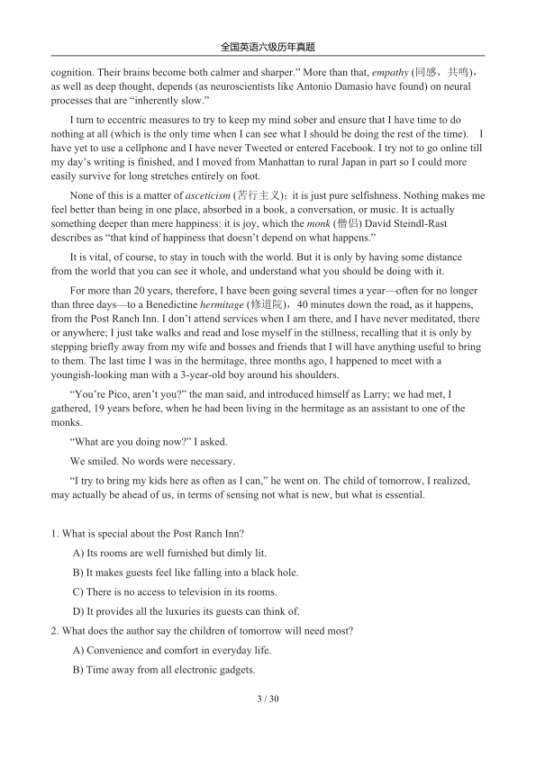
全国英语六级历年真题
3 / 30
cognition. Their brains become both calmer and sharper.” More than that, empathy (同感，共鸣)，
as well as deep thought, depends (as neuroscientists like Antonio Damasio have found) on neural
processes that are “inherently slow.”
I turn to eccentric measures to try to keep my mind sober and ensure that I have time to do
nothing at all (which is the only time when I can see what I should be doing the rest of the time). I
have yet to use a cellphone and I have never Tweeted or entered Facebook. I try not to go online till
my day’s writing is finished, and I moved from Manhattan to rural Japan in part so I could more
easily survive for long stretches entirely on foot.
None of this is a matter of asceticism (苦行主义)；it is just pure selfishness. Nothing makes me
feel better than being in one place, absorbed in a book, a conversation, or music. It is actually
something deeper than mere happiness: it is joy, which the monk (僧侣) David Steindl-Rast
describes as “that kind of happiness that doesn’t depend on what happens.”
It is vital, of course, to stay in touch with the world. But it is only by having some distance
from the world that you can see it whole, and understand what you should be doing with it.
For more than 20 years, therefore, I have been going several times a year—often for no longer
than three days—to a Benedictine hermitage (修道院)，40 minutes down the road, as it happens,
from the Post Ranch Inn. I don’t attend services when I am there, and I have never meditated, there
or anywhere; I just take walks and read and lose myself in the stillness, recalling that it is only by
stepping briefly away from my wife and bosses and friends that I will have anything useful to bring
to them. The last time I was in the hermitage, three months ago, I happened to meet with a
youngish-looking man with a 3-year-old boy around his shoulders.
“You’re Pico, aren’t you?” the man said, and introduced himself as Larry; we had met, I
gathered, 19 years before, when he had been living in the hermitage as an assistant to one of the
monks.
“What are you doing now?” I asked.
We smiled. No words were necessary.
“I try to bring my kids here as often as I can,” he went on. The child of tomorrow, I realized,
may actually be ahead of us, in terms of sensing not what is new, but what is essential.
1. What is special about the Post Ranch Inn?
A) Its rooms are well furnished but dimly lit.
B) It makes guests feel like falling into a black hole.
C) There is no access to television in its rooms.
D) It provides all the luxuries its guests can think of.
2. What does the author say the children of tomorrow will need most?
A) Convenience and comfort in everyday life.
B) Time away from all electronic gadgets.
查看 / 复制本页文字
全国英语六级历年真题 3 / 30 cognition. Their brains become both calmer and sharper.” More than that, empathy (同感，共鸣)， as well as deep thought, depends (as neuroscientists like Antonio Damasio have found) on neural processes that are “inherently slow.” I turn to eccentric measures to try to keep my mind sober and ensure that I have time to do nothing at all (which is the only time when I can see what I should be doing the rest of the time). I have yet to use a cellphone and I have never Tweeted or entered Facebook. I try not to go online till my day’s writing is finished, and I moved from Manhattan to rural Japan in part so I could more easily survive for long stretches entirely on foot. None of this is a matter of asceticism (苦行主义)；it is just pure selfishness. Nothing makes me feel better than being in one place, absorbed in a book, a conversation, or music. It is actually something deeper than mere happiness: it is joy, which the monk (僧侣) David Steindl-Rast describes as “that kind of happiness that doesn’t depend on what happens.” It is vital, of course, to stay in touch with the world. But it is only by having some distance from the world that you can see it whole, and understand what you should be doing with it. For more than 20 years, therefore, I have been going several times a year—often for no longer than three days—to a Benedictine hermitage (修道院)，40 minutes down the road, as it happens, from the Post Ranch Inn. I don’t attend services when I am there, and I have never meditated, there or anywhere; I just take walks and read and lose myself in the stillness, recalling that it is only by stepping briefly away from my wife and bosses and friends that I will have anything useful to bring to them. The last time I was in the hermitage, three months ago, I happened to meet with a youngish-looking man with a 3-year-old boy around his shoulders. “You’re Pico, aren’t you?” the man said, and introduced himself as Larry; we had met, I gathered, 19 years before, when he had been living in the hermitage as an assistant to one of the monks. “What are you doing now?” I asked. We smiled. No words were necessary. “I try to bring my kids here as often as I can,” he went on. The child of tomorrow, I realized, may actually be ahead of us, in terms of sensing not what is new, but what is essential. 1. What is special about the Post Ranch Inn? A) Its rooms are well furnished but dimly lit. B) It makes guests feel like falling into a black hole. C) There is no access to television in its rooms. D) It provides all the luxuries its guests can think of. 2. What does the author say the children of tomorrow will need most? A) Convenience and comfort in everyday life. B) Time away from all electronic gadgets.
第 4 / 30 页
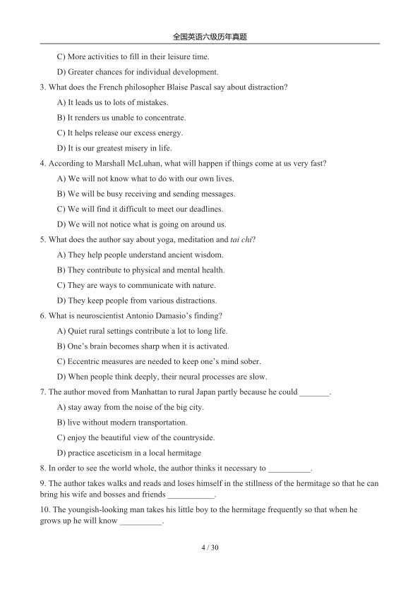
全国英语六级历年真题
4 / 30
C) More activities to fill in their leisure time.
D) Greater chances for individual development.
3. What does the French philosopher Blaise Pascal say about distraction?
A) It leads us to lots of mistakes.
B) It renders us unable to concentrate.
C) It helps release our excess energy.
D) It is our greatest misery in life.
4. According to Marshall McLuhan, what will happen if things come at us very fast?
A) We will not know what to do with our own lives.
B) We will be busy receiving and sending messages.
C) We will find it difficult to meet our deadlines.
D) We will not notice what is going on around us.
5. What does the author say about yoga, meditation and tai chi?
A) They help people understand ancient wisdom.
B) They contribute to physical and mental health.
C) They are ways to communicate with nature.
D) They keep people from various distractions.
6. What is neuroscientist Antonio Damasio’s finding?
A) Quiet rural settings contribute a lot to long life.
B) One’s brain becomes sharp when it is activated.
C) Eccentric measures are needed to keep one’s mind sober.
D) When people think deeply, their neural processes are slow.
7. The author moved from Manhattan to rural Japan partly because he could _______.
A) stay away from the noise of the big city.
B) live without modern transportation.
C) enjoy the beautiful view of the countryside.
D) practice asceticism in a local hermitage
8. In order to see the world whole, the author thinks it necessary to __________.
9. The author takes walks and reads and loses himself in the stillness of the hermitage so that he can
bring his wife and bosses and friends ___________.
10. The youngish-looking man takes his little boy to the hermitage frequently so that when he
grows up he will know __________.
查看 / 复制本页文字
全国英语六级历年真题 4 / 30 C) More activities to fill in their leisure time. D) Greater chances for individual development. 3. What does the French philosopher Blaise Pascal say about distraction? A) It leads us to lots of mistakes. B) It renders us unable to concentrate. C) It helps release our excess energy. D) It is our greatest misery in life. 4. According to Marshall McLuhan, what will happen if things come at us very fast? A) We will not know what to do with our own lives. B) We will be busy receiving and sending messages. C) We will find it difficult to meet our deadlines. D) We will not notice what is going on around us. 5. What does the author say about yoga, meditation and tai chi? A) They help people understand ancient wisdom. B) They contribute to physical and mental health. C) They are ways to communicate with nature. D) They keep people from various distractions. 6. What is neuroscientist Antonio Damasio’s finding? A) Quiet rural settings contribute a lot to long life. B) One’s brain becomes sharp when it is activated. C) Eccentric measures are needed to keep one’s mind sober. D) When people think deeply, their neural processes are slow. 7. The author moved from Manhattan to rural Japan partly because he could _______. A) stay away from the noise of the big city. B) live without modern transportation. C) enjoy the beautiful view of the countryside. D) practice asceticism in a local hermitage 8. In order to see the world whole, the author thinks it necessary to __________. 9. The author takes walks and reads and loses himself in the stillness of the hermitage so that he can bring his wife and bosses and friends ___________. 10. The youngish-looking man takes his little boy to the hermitage frequently so that when he grows up he will know __________.
第 5 / 30 页
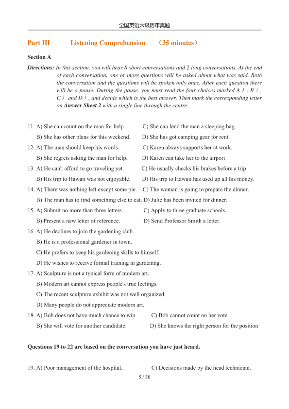
全国英语六级历年真题
5 / 30
Part III
Listening Comprehension
（35 minutes）
Section A
Directions: In this section, you will hear 8 short conversations and 2 long conversations. At the end
of each conversation, one or more questions will be asked about what was said. Both
the conversation and the questions will be spoken only once. After each question there
will be a pause. During the pause, you must read the four choices marked A）, B）,
C）and D）, and decide which is the best answer. Then mark the corresponding letter
on Answer Sheet 2 with a single line through the centre.
11. A) She can count on the man for help.
C) She can lend the man a sleeping bag.
B) She has other plans for this weekend.
D) She has got camping gear for rent.
12. A) The man should keep his words.
C) Karen always supports her at work.
B) She regrets asking the man for help.
D) Karen can take her to the airport
13. A) He can't afford to go traveling yet.
C) He usually checks his brakes before a trip
B) His trip to Hawaii was not enjoyable.
D) His trip to Hawaii has used up all his money.
14. A) There was nothing left except some pie.
C) The woman is going to prepare the dinner.
B) The man has to find something else to eat. D) Julie has been invited for dinner.
15. A) Submit no more than three letters.
C) Apply to three graduate schools.
B) Present a new letter of reference.
D) Send Professor Smith a letter.
16. A) He declines to join the gardening club.
B) He is a professional gardener in town.
C) He prefers to keep his gardening skills to himself.
D) He wishes to receive formal training in gardening.
17. A) Sculpture is not a typical form of modern art.
B) Modern art cannot express people's true feelings.
C) The recent sculpture exhibit was not well organized.
D) Many people do not appreciate modern art.
18. A) Bob does not have much chance to win.
C) Bob cannot count on her vote.
B) She will vote for another candidate.
D) She knows the right person for the position
Questions 19 to 22 are based on the conversation you have just heard.
19. A) Poor management of the hospital.
C) Decisions made by the head technician.
查看 / 复制本页文字
全国英语六级历年真题 5 / 30 Part III Listening Comprehension （35 minutes） Section A Directions: In this section, you will hear 8 short conversations and 2 long conversations. At the end of each conversation, one or more questions will be asked about what was said. Both the conversation and the questions will be spoken only once. After each question there will be a pause. During the pause, you must read the four choices marked A）, B）, C）and D）, and decide which is the best answer. Then mark the corresponding letter on Answer Sheet 2 with a single line through the centre. 11. A) She can count on the man for help. C) She can lend the man a sleeping bag. B) She has other plans for this weekend. D) She has got camping gear for rent. 12. A) The man should keep his words. C) Karen always supports her at work. B) She regrets asking the man for help. D) Karen can take her to the airport 13. A) He can't afford to go traveling yet. C) He usually checks his brakes before a trip B) His trip to Hawaii was not enjoyable. D) His trip to Hawaii has used up all his money. 14. A) There was nothing left except some pie. C) The woman is going to prepare the dinner. B) The man has to find something else to eat. D) Julie has been invited for dinner. 15. A) Submit no more than three letters. C) Apply to three graduate schools. B) Present a new letter of reference. D) Send Professor Smith a letter. 16. A) He declines to join the gardening club. B) He is a professional gardener in town. C) He prefers to keep his gardening skills to himself. D) He wishes to receive formal training in gardening. 17. A) Sculpture is not a typical form of modern art. B) Modern art cannot express people's true feelings. C) The recent sculpture exhibit was not well organized. D) Many people do not appreciate modern art. 18. A) Bob does not have much chance to win. C) Bob cannot count on her vote. B) She will vote for another candidate. D) She knows the right person for the position Questions 19 to 22 are based on the conversation you have just heard. 19. A) Poor management of the hospital. C) Decisions made by the head technician.
第 6 / 30 页
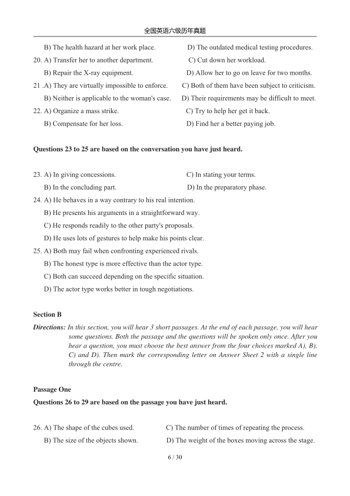
全国英语六级历年真题
6 / 30
B) The health hazard at her work place.
D) The outdated medical testing procedures.
20. A) Transfer her to another department.
C) Cut down her workload.
B) Repair the X-ray equipment.
D) Allow her to go on leave for two months.
21 .A) They are virtually impossible to enforce.
C) Both of them have been subject to criticism.
B) Neither is applicable to the woman's case.
D) Their requirements may be difficult to meet.
22. A) Organize a mass strike.
C) Try to help her get it back.
B) Compensate for her loss.
D) Find her a better paying job.
Questions 23 to 25 are based on the conversation you have just heard.
23. A) In giving concessions.
C) In stating your terms.
B) In the concluding part.
D) In the preparatory phase.
24. A) He behaves in a way contrary to his real intention.
B) He presents his arguments in a straightforward way.
C) He responds readily to the other party's proposals.
D) He uses lots of gestures to help make his points clear.
25. A) Both may fail when confronting experienced rivals.
B) The honest type is more effective than the actor type.
C) Both can succeed depending on the specific situation.
D) The actor type works better in tough negotiations.
Section B
Directions: In this section, you will hear 3 short passages. At the end of each passage, you will hear
some questions. Both the passage and the questions will be spoken only once. After you
hear a question, you must choose the best answer from the four choices marked A), B),
C) and D). Then mark the corresponding letter on Answer Sheet 2 with a single line
through the centre.
Passage One
Questions 26 to 29 are based on the passage you have just heard.
26. A) The shape of the cubes used.
C) The number of times of repeating the process.
B) The size of the objects shown.
D) The weight of the boxes moving across the stage.
查看 / 复制本页文字
全国英语六级历年真题 6 / 30 B) The health hazard at her work place. D) The outdated medical testing procedures. 20. A) Transfer her to another department. C) Cut down her workload. B) Repair the X-ray equipment. D) Allow her to go on leave for two months. 21 .A) They are virtually impossible to enforce. C) Both of them have been subject to criticism. B) Neither is applicable to the woman's case. D) Their requirements may be difficult to meet. 22. A) Organize a mass strike. C) Try to help her get it back. B) Compensate for her loss. D) Find her a better paying job. Questions 23 to 25 are based on the conversation you have just heard. 23. A) In giving concessions. C) In stating your terms. B) In the concluding part. D) In the preparatory phase. 24. A) He behaves in a way contrary to his real intention. B) He presents his arguments in a straightforward way. C) He responds readily to the other party's proposals. D) He uses lots of gestures to help make his points clear. 25. A) Both may fail when confronting experienced rivals. B) The honest type is more effective than the actor type. C) Both can succeed depending on the specific situation. D) The actor type works better in tough negotiations. Section B Directions: In this section, you will hear 3 short passages. At the end of each passage, you will hear some questions. Both the passage and the questions will be spoken only once. After you hear a question, you must choose the best answer from the four choices marked A), B), C) and D). Then mark the corresponding letter on Answer Sheet 2 with a single line through the centre. Passage One Questions 26 to 29 are based on the passage you have just heard. 26. A) The shape of the cubes used. C) The number of times of repeating the process. B) The size of the objects shown. D) The weight of the boxes moving across the stage.
第 7 / 30 页
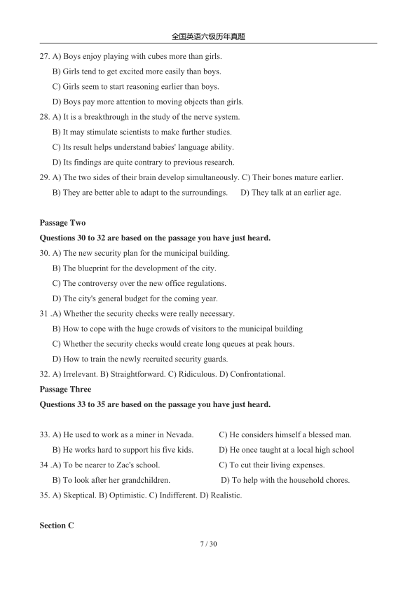
全国英语六级历年真题
7 / 30
27. A) Boys enjoy playing with cubes more than girls.
B) Girls tend to get excited more easily than boys.
C) Girls seem to start reasoning earlier than boys.
D) Boys pay more attention to moving objects than girls.
28. A) It is a breakthrough in the study of the nerve system.
B) It may stimulate scientists to make further studies.
C) Its result helps understand babies' language ability.
D) Its findings are quite contrary to previous research.
29. A) The two sides of their brain develop simultaneously. C) Their bones mature earlier.
B) They are better able to adapt to the surroundings.
D) They talk at an earlier age.
Passage Two
Questions 30 to 32 are based on the passage you have just heard.
30. A) The new security plan for the municipal building.
B) The blueprint for the development of the city.
C) The controversy over the new office regulations.
D) The city's general budget for the coming year.
31 .A) Whether the security checks were really necessary.
B) How to cope with the huge crowds of visitors to the municipal building
C) Whether the security checks would create long queues at peak hours.
D) How to train the newly recruited security guards.
32. A) Irrelevant. B) Straightforward. C) Ridiculous. D) Confrontational.
Passage Three
Questions 33 to 35 are based on the passage you have just heard.
33. A) He used to work as a miner in Nevada.
C) He considers himself a blessed man.
B) He works hard to support his five kids.
D) He once taught at a local high school
34 .A) To be nearer to Zac's school.
C) To cut their living expenses.
B) To look after her grandchildren.
D) To help with the household chores.
35. A) Skeptical. B) Optimistic. C) Indifferent. D) Realistic.
Section C
查看 / 复制本页文字
全国英语六级历年真题 7 / 30 27. A) Boys enjoy playing with cubes more than girls. B) Girls tend to get excited more easily than boys. C) Girls seem to start reasoning earlier than boys. D) Boys pay more attention to moving objects than girls. 28. A) It is a breakthrough in the study of the nerve system. B) It may stimulate scientists to make further studies. C) Its result helps understand babies' language ability. D) Its findings are quite contrary to previous research. 29. A) The two sides of their brain develop simultaneously. C) Their bones mature earlier. B) They are better able to adapt to the surroundings. D) They talk at an earlier age. Passage Two Questions 30 to 32 are based on the passage you have just heard. 30. A) The new security plan for the municipal building. B) The blueprint for the development of the city. C) The controversy over the new office regulations. D) The city's general budget for the coming year. 31 .A) Whether the security checks were really necessary. B) How to cope with the huge crowds of visitors to the municipal building C) Whether the security checks would create long queues at peak hours. D) How to train the newly recruited security guards. 32. A) Irrelevant. B) Straightforward. C) Ridiculous. D) Confrontational. Passage Three Questions 33 to 35 are based on the passage you have just heard. 33. A) He used to work as a miner in Nevada. C) He considers himself a blessed man. B) He works hard to support his five kids. D) He once taught at a local high school 34 .A) To be nearer to Zac's school. C) To cut their living expenses. B) To look after her grandchildren. D) To help with the household chores. 35. A) Skeptical. B) Optimistic. C) Indifferent. D) Realistic. Section C
第 8 / 30 页
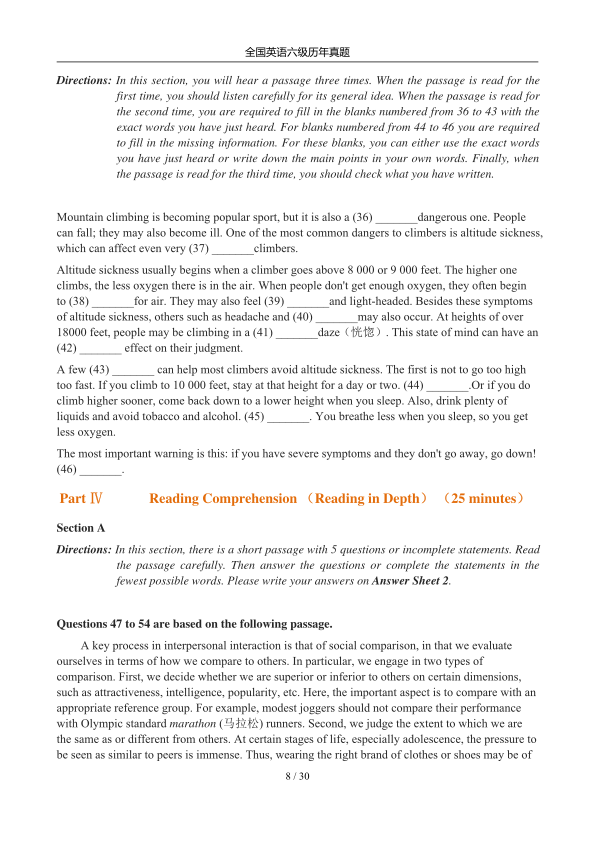
全国英语六级历年真题
8 / 30
Directions: In this section, you will hear a passage three times. When the passage is read for the
first time, you should listen carefully for its general idea. When the passage is read for
the second time, you are required to fill in the blanks numbered from 36 to 43 with the
exact words you have just heard. For blanks numbered from 44 to 46 you are required
to fill in the missing information. For these blanks, you can either use the exact words
you have just heard or write down the main points in your own words. Finally, when
the passage is read for the third time, you should check what you have written.
Mountain climbing is becoming popular sport, but it is also a (36) _______dangerous one. People
can fall; they may also become ill. One of the most common dangers to climbers is altitude sickness,
which can affect even very (37) _______climbers.
Altitude sickness usually begins when a climber goes above 8 000 or 9 000 feet. The higher one
climbs, the less oxygen there is in the air. When people don't get enough oxygen, they often begin
to (38) _______for air. They may also feel (39) _______and light-headed. Besides these symptoms
of altitude sickness, others such as headache and (40) _______may also occur. At heights of over
18000 feet, people may be climbing in a (41) _______daze（恍惚）. This state of mind can have an
(42) _______ effect on their judgment.
A few (43) _______ can help most climbers avoid altitude sickness. The first is not to go too high
too fast. If you climb to 10 000 feet, stay at that height for a day or two. (44) _______.Or if you do
climb higher sooner, come back down to a lower height when you sleep. Also, drink plenty of
liquids and avoid tobacco and alcohol. (45) _______. You breathe less when you sleep, so you get
less oxygen.
The most important warning is this: if you have severe symptoms and they don't go away, go down!
(46) _______.
Part Ⅳ
Reading Comprehension （Reading in Depth）（25 minutes）
Section A
Directions: In this section, there is a short passage with 5 questions or incomplete statements. Read
the passage carefully. Then answer the questions or complete the statements in the
fewest possible words. Please write your answers on Answer Sheet 2.
Questions 47 to 54 are based on the following passage.
A key process in interpersonal interaction is that of social comparison, in that we evaluate
ourselves in terms of how we compare to others. In particular, we engage in two types of
comparison. First, we decide whether we are superior or inferior to others on certain dimensions,
such as attractiveness, intelligence, popularity, etc. Here, the important aspect is to compare with an
appropriate reference group. For example, modest joggers should not compare their performance
with Olympic standard marathon (马拉松) runners. Second, we judge the extent to which we are
the same as or different from others. At certain stages of life, especially adolescence, the pressure to
be seen as similar to peers is immense. Thus, wearing the right brand of clothes or shoes may be of
查看 / 复制本页文字
全国英语六级历年真题 8 / 30 Directions: In this section, you will hear a passage three times. When the passage is read for the first time, you should listen carefully for its general idea. When the passage is read for the second time, you are required to fill in the blanks numbered from 36 to 43 with the exact words you have just heard. For blanks numbered from 44 to 46 you are required to fill in the missing information. For these blanks, you can either use the exact words you have just heard or write down the main points in your own words. Finally, when the passage is read for the third time, you should check what you have written. Mountain climbing is becoming popular sport, but it is also a (36) _______dangerous one. People can fall; they may also become ill. One of the most common dangers to climbers is altitude sickness, which can affect even very (37) _______climbers. Altitude sickness usually begins when a climber goes above 8 000 or 9 000 feet. The higher one climbs, the less oxygen there is in the air. When people don't get enough oxygen, they often begin to (38) _______for air. They may also feel (39) _______and light-headed. Besides these symptoms of altitude sickness, others such as headache and (40) _______may also occur. At heights of over 18000 feet, people may be climbing in a (41) _______daze（恍惚）. This state of mind can have an (42) _______ effect on their judgment. A few (43) _______ can help most climbers avoid altitude sickness. The first is not to go too high too fast. If you climb to 10 000 feet, stay at that height for a day or two. (44) _______.Or if you do climb higher sooner, come back down to a lower height when you sleep. Also, drink plenty of liquids and avoid tobacco and alcohol. (45) _______. You breathe less when you sleep, so you get less oxygen. The most important warning is this: if you have severe symptoms and they don't go away, go down! (46) _______. Part Ⅳ Reading Comprehension （Reading in Depth）（25 minutes） Section A Directions: In this section, there is a short passage with 5 questions or incomplete statements. Read the passage carefully. Then answer the questions or complete the statements in the fewest possible words. Please write your answers on Answer Sheet 2. Questions 47 to 54 are based on the following passage. A key process in interpersonal interaction is that of social comparison, in that we evaluate ourselves in terms of how we compare to others. In particular, we engage in two types of comparison. First, we decide whether we are superior or inferior to others on certain dimensions, such as attractiveness, intelligence, popularity, etc. Here, the important aspect is to compare with an appropriate reference group. For example, modest joggers should not compare their performance with Olympic standard marathon (马拉松) runners. Second, we judge the extent to which we are the same as or different from others. At certain stages of life, especially adolescence, the pressure to be seen as similar to peers is immense. Thus, wearing the right brand of clothes or shoes may be of
第 9 / 30 页
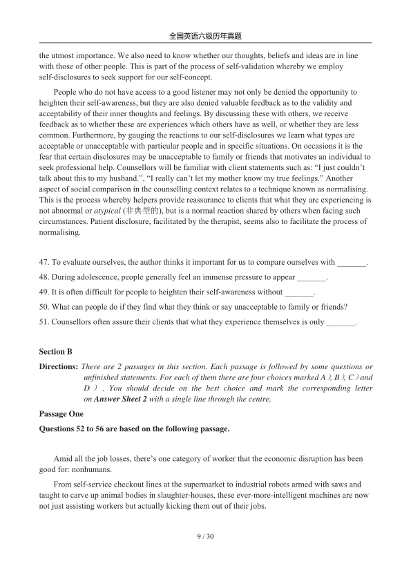
全国英语六级历年真题
9 / 30
the utmost importance. We also need to know whether our thoughts, beliefs and ideas are in line
with those of other people. This is part of the process of self-validation whereby we employ
self-disclosures to seek support for our self-concept.
People who do not have access to a good listener may not only be denied the opportunity to
heighten their self-awareness, but they are also denied valuable feedback as to the validity and
acceptability of their inner thoughts and feelings. By discussing these with others, we receive
feedback as to whether these are experiences which others have as well, or whether they are less
common. Furthermore, by gauging the reactions to our self-disclosures we learn what types are
acceptable or unacceptable with particular people and in specific situations. On occasions it is the
fear that certain disclosures may be unacceptable to family or friends that motivates an individual to
seek professional help. Counsellors will be familiar with client statements such as: “I just couldn’t
talk about this to my husband.”, “I really can’t let my mother know my true feelings.” Another
aspect of social comparison in the counselling context relates to a technique known as normalising.
This is the process whereby helpers provide reassurance to clients that what they are experiencing is
not abnormal or atypical (非典型的), but is a normal reaction shared by others when facing such
circumstances. Patient disclosure, facilitated by the therapist, seems also to facilitate the process of
normalising.
47. To evaluate ourselves, the author thinks it important for us to compare ourselves with _______.
48. During adolescence, people generally feel an immense pressure to appear _______.
49. It is often difficult for people to heighten their self-awareness without _______.
50. What can people do if they find what they think or say unacceptable to family or friends?
51. Counsellors often assure their clients that what they experience themselves is only _______.
Section B
Directions: There are 2 passages in this section. Each passage is followed by some questions or
unfinished statements. For each of them there are four choices marked A）, B）, C）and
D ）. You should decide on the best choice and mark the corresponding letter
on Answer Sheet 2 with a single line through the centre.
Passage One
Questions 52 to 56 are based on the following passage.
Amid all the job losses, there’s one category of worker that the economic disruption has been
good for: nonhumans.
From self-service checkout lines at the supermarket to industrial robots armed with saws and
taught to carve up animal bodies in slaughter-houses, these ever-more-intelligent machines are now
not just assisting workers but actually kicking them out of their jobs.
查看 / 复制本页文字
全国英语六级历年真题 9 / 30 the utmost importance. We also need to know whether our thoughts, beliefs and ideas are in line with those of other people. This is part of the process of self-validation whereby we employ self-disclosures to seek support for our self-concept. People who do not have access to a good listener may not only be denied the opportunity to heighten their self-awareness, but they are also denied valuable feedback as to the validity and acceptability of their inner thoughts and feelings. By discussing these with others, we receive feedback as to whether these are experiences which others have as well, or whether they are less common. Furthermore, by gauging the reactions to our self-disclosures we learn what types are acceptable or unacceptable with particular people and in specific situations. On occasions it is the fear that certain disclosures may be unacceptable to family or friends that motivates an individual to seek professional help. Counsellors will be familiar with client statements such as: “I just couldn’t talk about this to my husband.”, “I really can’t let my mother know my true feelings.” Another aspect of social comparison in the counselling context relates to a technique known as normalising. This is the process whereby helpers provide reassurance to clients that what they are experiencing is not abnormal or atypical (非典型的), but is a normal reaction shared by others when facing such circumstances. Patient disclosure, facilitated by the therapist, seems also to facilitate the process of normalising. 47. To evaluate ourselves, the author thinks it important for us to compare ourselves with _______. 48. During adolescence, people generally feel an immense pressure to appear _______. 49. It is often difficult for people to heighten their self-awareness without _______. 50. What can people do if they find what they think or say unacceptable to family or friends? 51. Counsellors often assure their clients that what they experience themselves is only _______. Section B Directions: There are 2 passages in this section. Each passage is followed by some questions or unfinished statements. For each of them there are four choices marked A）, B）, C）and D ）. You should decide on the best choice and mark the corresponding letter on Answer Sheet 2 with a single line through the centre. Passage One Questions 52 to 56 are based on the following passage. Amid all the job losses, there’s one category of worker that the economic disruption has been good for: nonhumans. From self-service checkout lines at the supermarket to industrial robots armed with saws and taught to carve up animal bodies in slaughter-houses, these ever-more-intelligent machines are now not just assisting workers but actually kicking them out of their jobs.
第 10 / 30 页
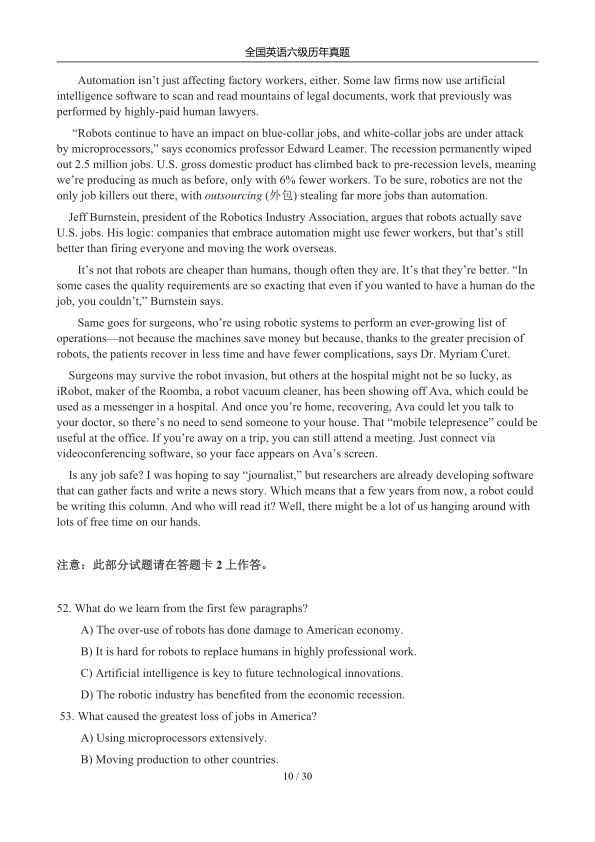
全国英语六级历年真题
10 / 30
Automation isn’t just affecting factory workers, either. Some law firms now use artificial
intelligence software to scan and read mountains of legal documents, work that previously was
performed by highly-paid human lawyers.
“Robots continue to have an impact on blue-collar jobs, and white-collar jobs are under attack
by microprocessors,” says economics professor Edward Leamer. The recession permanently wiped
out 2.5 million jobs. U.S. gross domestic product has climbed back to pre-recession levels, meaning
we’re producing as much as before, only with 6% fewer workers. To be sure, robotics are not the
only job killers out there, with outsourcing (外包) stealing far more jobs than automation.
Jeff Burnstein, president of the Robotics Industry Association, argues that robots actually save
U.S. jobs. His logic: companies that embrace automation might use fewer workers, but that’s still
better than firing everyone and moving the work overseas.
It’s not that robots are cheaper than humans, though often they are. It’s that they’re better. “In
some cases the quality requirements are so exacting that even if you wanted to have a human do the
job, you couldn’t,” Burnstein says.
Same goes for surgeons, who’re using robotic systems to perform an ever-growing list of
operations—not because the machines save money but because, thanks to the greater precision of
robots, the patients recover in less time and have fewer complications, says Dr. Myriam Curet.
Surgeons may survive the robot invasion, but others at the hospital might not be so lucky, as
iRobot, maker of the Roomba, a robot vacuum cleaner, has been showing off Ava, which could be
used as a messenger in a hospital. And once you’re home, recovering, Ava could let you talk to
your doctor, so there’s no need to send someone to your house. That “mobile telepresence” could be
useful at the office. If you’re away on a trip, you can still attend a meeting. Just connect via
videoconferencing software, so your face appears on Ava’s screen.
Is any job safe? I was hoping to say “journalist,” but researchers are already developing software
that can gather facts and write a news story. Which means that a few years from now, a robot could
be writing this column. And who will read it? Well, there might be a lot of us hanging around with
lots of free time on our hands.
注意：此部分试题请在答题卡2 上作答。
52. What do we learn from the first few paragraphs?
A) The over-use of robots has done damage to American economy.
B) It is hard for robots to replace humans in highly professional work.
C) Artificial intelligence is key to future technological innovations.
D) The robotic industry has benefited from the economic recession.
53. What caused the greatest loss of jobs in America?
A) Using microprocessors extensively.
B) Moving production to other countries.
查看 / 复制本页文字
全国英语六级历年真题 10 / 30 Automation isn’t just affecting factory workers, either. Some law firms now use artificial intelligence software to scan and read mountains of legal documents, work that previously was performed by highly-paid human lawyers. “Robots continue to have an impact on blue-collar jobs, and white-collar jobs are under attack by microprocessors,” says economics professor Edward Leamer. The recession permanently wiped out 2.5 million jobs. U.S. gross domestic product has climbed back to pre-recession levels, meaning we’re producing as much as before, only with 6% fewer workers. To be sure, robotics are not the only job killers out there, with outsourcing (外包) stealing far more jobs than automation. Jeff Burnstein, president of the Robotics Industry Association, argues that robots actually save U.S. jobs. His logic: companies that embrace automation might use fewer workers, but that’s still better than firing everyone and moving the work overseas. It’s not that robots are cheaper than humans, though often they are. It’s that they’re better. “In some cases the quality requirements are so exacting that even if you wanted to have a human do the job, you couldn’t,” Burnstein says. Same goes for surgeons, who’re using robotic systems to perform an ever-growing list of operations—not because the machines save money but because, thanks to the greater precision of robots, the patients recover in less time and have fewer complications, says Dr. Myriam Curet. Surgeons may survive the robot invasion, but others at the hospital might not be so lucky, as iRobot, maker of the Roomba, a robot vacuum cleaner, has been showing off Ava, which could be used as a messenger in a hospital. And once you’re home, recovering, Ava could let you talk to your doctor, so there’s no need to send someone to your house. That “mobile telepresence” could be useful at the office. If you’re away on a trip, you can still attend a meeting. Just connect via videoconferencing software, so your face appears on Ava’s screen. Is any job safe? I was hoping to say “journalist,” but researchers are already developing software that can gather facts and write a news story. Which means that a few years from now, a robot could be writing this column. And who will read it? Well, there might be a lot of us hanging around with lots of free time on our hands. 注意：此部分试题请在答题卡2 上作答。 52. What do we learn from the first few paragraphs? A) The over-use of robots has done damage to American economy. B) It is hard for robots to replace humans in highly professional work. C) Artificial intelligence is key to future technological innovations. D) The robotic industry has benefited from the economic recession. 53. What caused the greatest loss of jobs in America? A) Using microprocessors extensively. B) Moving production to other countries.
第 11 / 30 页
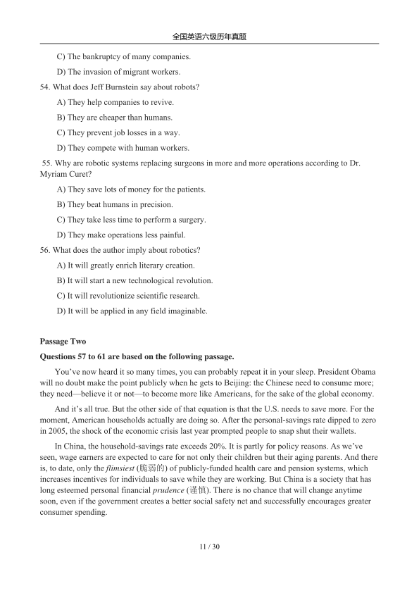
全国英语六级历年真题
11 / 30
C) The bankruptcy of many companies.
D) The invasion of migrant workers.
54. What does Jeff Burnstein say about robots?
A) They help companies to revive.
B) They are cheaper than humans.
C) They prevent job losses in a way.
D) They compete with human workers.
55. Why are robotic systems replacing surgeons in more and more operations according to Dr.
Myriam Curet?
A) They save lots of money for the patients.
B) They beat humans in precision.
C) They take less time to perform a surgery.
D) They make operations less painful.
56. What does the author imply about robotics?
A) It will greatly enrich literary creation.
B) It will start a new technological revolution.
C) It will revolutionize scientific research.
D) It will be applied in any field imaginable.
Passage Two
Questions 57 to 61 are based on the following passage.
You’ve now heard it so many times, you can probably repeat it in your sleep. President Obama
will no doubt make the point publicly when he gets to Beijing: the Chinese need to consume more;
they need—believe it or not—to become more like Americans, for the sake of the global economy.
And it’s all true. But the other side of that equation is that the U.S. needs to save more. For the
moment, American households actually are doing so. After the personal-savings rate dipped to zero
in 2005, the shock of the economic crisis last year prompted people to snap shut their wallets.
In China, the household-savings rate exceeds 20%. It is partly for policy reasons. As we’ve
seen, wage earners are expected to care for not only their children but their aging parents. And there
is, to date, only the flimsiest (脆弱的) of publicly-funded health care and pension systems, which
increases incentives for individuals to save while they are working. But China is a society that has
long esteemed personal financial prudence (谨慎). There is no chance that will change anytime
soon, even if the government creates a better social safety net and successfully encourages greater
consumer spending.
查看 / 复制本页文字
全国英语六级历年真题 11 / 30 C) The bankruptcy of many companies. D) The invasion of migrant workers. 54. What does Jeff Burnstein say about robots? A) They help companies to revive. B) They are cheaper than humans. C) They prevent job losses in a way. D) They compete with human workers. 55. Why are robotic systems replacing surgeons in more and more operations according to Dr. Myriam Curet? A) They save lots of money for the patients. B) They beat humans in precision. C) They take less time to perform a surgery. D) They make operations less painful. 56. What does the author imply about robotics? A) It will greatly enrich literary creation. B) It will start a new technological revolution. C) It will revolutionize scientific research. D) It will be applied in any field imaginable. Passage Two Questions 57 to 61 are based on the following passage. You’ve now heard it so many times, you can probably repeat it in your sleep. President Obama will no doubt make the point publicly when he gets to Beijing: the Chinese need to consume more; they need—believe it or not—to become more like Americans, for the sake of the global economy. And it’s all true. But the other side of that equation is that the U.S. needs to save more. For the moment, American households actually are doing so. After the personal-savings rate dipped to zero in 2005, the shock of the economic crisis last year prompted people to snap shut their wallets. In China, the household-savings rate exceeds 20%. It is partly for policy reasons. As we’ve seen, wage earners are expected to care for not only their children but their aging parents. And there is, to date, only the flimsiest (脆弱的) of publicly-funded health care and pension systems, which increases incentives for individuals to save while they are working. But China is a society that has long esteemed personal financial prudence (谨慎). There is no chance that will change anytime soon, even if the government creates a better social safety net and successfully encourages greater consumer spending.
第 12 / 30 页
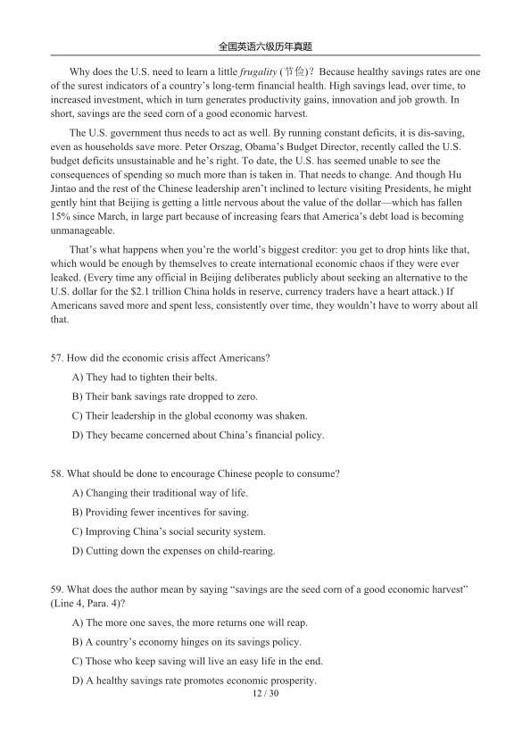
全国英语六级历年真题
12 / 30
Why does the U.S. need to learn a little frugality (节俭)？Because healthy savings rates are one
of the surest indicators of a country’s long-term financial health. High savings lead, over time, to
increased investment, which in turn generates productivity gains, innovation and job growth. In
short, savings are the seed corn of a good economic harvest.
The U.S. government thus needs to act as well. By running constant deficits, it is dis-saving,
even as households save more. Peter Orszag, Obama’s Budget Director, recently called the U.S.
budget deficits unsustainable and he’s right. To date, the U.S. has seemed unable to see the
consequences of spending so much more than is taken in. That needs to change. And though Hu
Jintao and the rest of the Chinese leadership aren’t inclined to lecture visiting Presidents, he might
gently hint that Beijing is getting a little nervous about the value of the dollar—which has fallen
15% since March, in large part because of increasing fears that America’s debt load is becoming
unmanageable.
That’s what happens when you’re the world’s biggest creditor: you get to drop hints like that,
which would be enough by themselves to create international economic chaos if they were ever
leaked. (Every time any official in Beijing deliberates publicly about seeking an alternative to the
U.S. dollar for the $2.1 trillion China holds in reserve, currency traders have a heart attack.) If
Americans saved more and spent less, consistently over time, they wouldn’t have to worry about all
that.
57. How did the economic crisis affect Americans?
A) They had to tighten their belts.
B) Their bank savings rate dropped to zero.
C) Their leadership in the global economy was shaken.
D) They became concerned about China’s financial policy.
58. What should be done to encourage Chinese people to consume?
A) Changing their traditional way of life.
B) Providing fewer incentives for saving.
C) Improving China’s social security system.
D) Cutting down the expenses on child-rearing.
59. What does the author mean by saying “savings are the seed corn of a good economic harvest”
(Line 4, Para. 4)?
A) The more one saves, the more returns one will reap.
B) A country’s economy hinges on its savings policy.
C) Those who keep saving will live an easy life in the end.
D) A healthy savings rate promotes economic prosperity.
查看 / 复制本页文字
全国英语六级历年真题 12 / 30 Why does the U.S. need to learn a little frugality (节俭)？Because healthy savings rates are one of the surest indicators of a country’s long-term financial health. High savings lead, over time, to increased investment, which in turn generates productivity gains, innovation and job growth. In short, savings are the seed corn of a good economic harvest. The U.S. government thus needs to act as well. By running constant deficits, it is dis-saving, even as households save more. Peter Orszag, Obama’s Budget Director, recently called the U.S. budget deficits unsustainable and he’s right. To date, the U.S. has seemed unable to see the consequences of spending so much more than is taken in. That needs to change. And though Hu Jintao and the rest of the Chinese leadership aren’t inclined to lecture visiting Presidents, he might gently hint that Beijing is getting a little nervous about the value of the dollar—which has fallen 15% since March, in large part because of increasing fears that America’s debt load is becoming unmanageable. That’s what happens when you’re the world’s biggest creditor: you get to drop hints like that, which would be enough by themselves to create international economic chaos if they were ever leaked. (Every time any official in Beijing deliberates publicly about seeking an alternative to the U.S. dollar for the $2.1 trillion China holds in reserve, currency traders have a heart attack.) If Americans saved more and spent less, consistently over time, they wouldn’t have to worry about all that. 57. How did the economic crisis affect Americans? A) They had to tighten their belts. B) Their bank savings rate dropped to zero. C) Their leadership in the global economy was shaken. D) They became concerned about China’s financial policy. 58. What should be done to encourage Chinese people to consume? A) Changing their traditional way of life. B) Providing fewer incentives for saving. C) Improving China’s social security system. D) Cutting down the expenses on child-rearing. 59. What does the author mean by saying “savings are the seed corn of a good economic harvest” (Line 4, Para. 4)? A) The more one saves, the more returns one will reap. B) A country’s economy hinges on its savings policy. C) Those who keep saving will live an easy life in the end. D) A healthy savings rate promotes economic prosperity.
第 13 / 30 页
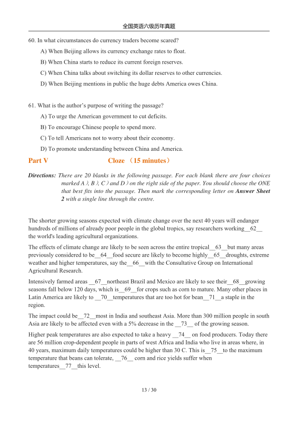
全国英语六级历年真题
13 / 30
60. In what circumstances do currency traders become scared?
A) When Beijing allows its currency exchange rates to float.
B) When China starts to reduce its current foreign reserves.
C) When China talks about switching its dollar reserves to other currencies.
D) When Beijing mentions in public the huge debts America owes China.
61. What is the author’s purpose of writing the passage?
A) To urge the American government to cut deficits.
B) To encourage Chinese people to spend more.
C) To tell Americans not to worry about their economy.
D) To promote understanding between China and America.
Part V
Cloze （15 minutes）
Directions: There are 20 blanks in the following passage. For each blank there are four choices
marked A）, B）, C）and D）on the right side of the paper. You should choose the ONE
that best fits into the passage. Then mark the corresponding letter on Answer Sheet
2 with a single line through the centre.
The shorter growing seasons expected with climate change over the next 40 years will endanger
hundreds of millions of already poor people in the global tropics, say researchers working__62__
the world's leading agricultural organizations.
The effects of climate change are likely to be seen across the entire tropical__63__but many areas
previously considered to be__64__food secure are likely to become highly__65__droughts, extreme
weather and higher temperatures, say the__66__with the Consultative Group on International
Agricultural Research.
Intensively farmed areas __67__northeast Brazil and Mexico are likely to see their__68__growing
seasons fall below 120 days, which is__69__for crops such as corn to mature. Many other places in
Latin America are likely to __70__temperatures that are too hot for bean__71__a staple in the
region.
The impact could be__72__most in India and southeast Asia. More than 300 million people in south
Asia are likely to be affected even with a 5% decrease in the __73__ of the growing season.
Higher peak temperatures are also expected to take a heavy __74__ on food producers. Today there
are 56 million crop-dependent people in parts of west Africa and India who live in areas where, in
40 years, maximum daily temperatures could be higher than 30 C. This is__75__to the maximum
temperature that beans can tolerate, __76__ corn and rice yields suffer when
temperatures__77__this level.
查看 / 复制本页文字
全国英语六级历年真题 13 / 30 60. In what circumstances do currency traders become scared? A) When Beijing allows its currency exchange rates to float. B) When China starts to reduce its current foreign reserves. C) When China talks about switching its dollar reserves to other currencies. D) When Beijing mentions in public the huge debts America owes China. 61. What is the author’s purpose of writing the passage? A) To urge the American government to cut deficits. B) To encourage Chinese people to spend more. C) To tell Americans not to worry about their economy. D) To promote understanding between China and America. Part V Cloze （15 minutes） Directions: There are 20 blanks in the following passage. For each blank there are four choices marked A）, B）, C）and D）on the right side of the paper. You should choose the ONE that best fits into the passage. Then mark the corresponding letter on Answer Sheet 2 with a single line through the centre. The shorter growing seasons expected with climate change over the next 40 years will endanger hundreds of millions of already poor people in the global tropics, say researchers working__62__ the world's leading agricultural organizations. The effects of climate change are likely to be seen across the entire tropical__63__but many areas previously considered to be__64__food secure are likely to become highly__65__droughts, extreme weather and higher temperatures, say the__66__with the Consultative Group on International Agricultural Research. Intensively farmed areas __67__northeast Brazil and Mexico are likely to see their__68__growing seasons fall below 120 days, which is__69__for crops such as corn to mature. Many other places in Latin America are likely to __70__temperatures that are too hot for bean__71__a staple in the region. The impact could be__72__most in India and southeast Asia. More than 300 million people in south Asia are likely to be affected even with a 5% decrease in the __73__ of the growing season. Higher peak temperatures are also expected to take a heavy __74__ on food producers. Today there are 56 million crop-dependent people in parts of west Africa and India who live in areas where, in 40 years, maximum daily temperatures could be higher than 30 C. This is__75__to the maximum temperature that beans can tolerate, __76__ corn and rice yields suffer when temperatures__77__this level.
第 14 / 30 页
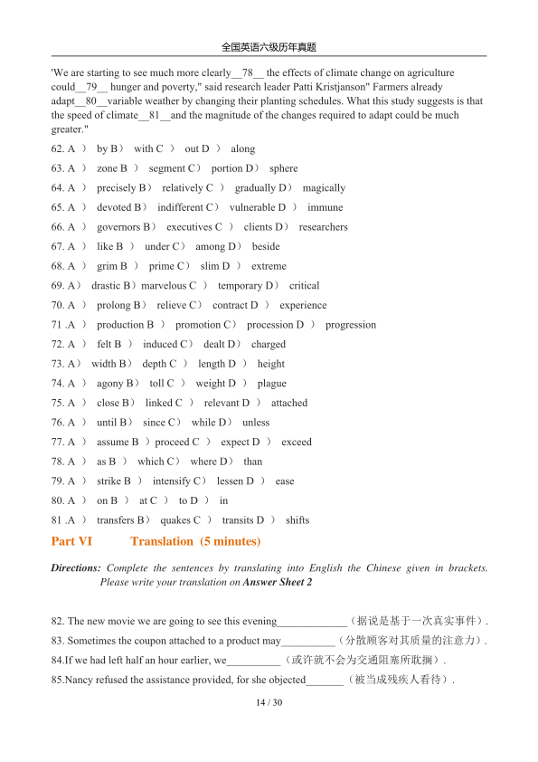
全国英语六级历年真题
14 / 30
'We are starting to see much more clearly__78__ the effects of climate change on agriculture
could__79__ hunger and poverty," said research leader Patti Kristjanson" Farmers already
adapt__80__variable weather by changing their planting schedules. What this study suggests is that
the speed of climate__81__and the magnitude of the changes required to adapt could be much
greater."
62. A ）by B）with C ）out D ）along
63. A ）zone B ）segment C）portion D）sphere
64. A ）precisely B）relatively C ）gradually D）magically
65. A ）devoted B）indifferent C）vulnerable D ）immune
66. A ）governors B）executives C ）clients D）researchers
67. A ）like B ）under C）among D）beside
68. A ）grim B ）prime C）slim D ）extreme
69. A）drastic B）marvelous C ）temporary D）critical
70. A ）prolong B）relieve C）contract D ）experience
71 .A ）production B ）promotion C）procession D ）progression
72. A ）felt B ）induced C）dealt D）charged
73. A）width B）depth C ）length D ）height
74. A ）agony B）toll C ）weight D ）plague
75. A ）close B）linked C ）relevant D ）attached
76. A ）until B）since C）while D）unless
77. A ）assume B ）proceed C ）expect D ）exceed
78. A ）as B ）which C）where D）than
79. A ）strike B ）intensify C）lessen D ）ease
80. A ）on B ）at C ）to D ）in
81 .A ）transfers B）quakes C ）transits D ）shifts
Part VI
Translation (5 minutes)
Directions: Complete the sentences by translating into English the Chinese given in brackets.
Please write your translation on Answer Sheet 2
82. The new movie we are going to see this evening_____________（据说是基于一次真实事件）.
83. Sometimes the coupon attached to a product may__________（分散顾客对其质量的注意力）.
84.If we had left half an hour earlier, we__________（或许就不会为交通阻塞所耽搁）.
85.Nancy refused the assistance provided, for she objected_______（被当成残疾人看待）.
查看 / 复制本页文字
全国英语六级历年真题 14 / 30 'We are starting to see much more clearly__78__ the effects of climate change on agriculture could__79__ hunger and poverty," said research leader Patti Kristjanson" Farmers already adapt__80__variable weather by changing their planting schedules. What this study suggests is that the speed of climate__81__and the magnitude of the changes required to adapt could be much greater." 62. A ）by B）with C ）out D ）along 63. A ）zone B ）segment C）portion D）sphere 64. A ）precisely B）relatively C ）gradually D）magically 65. A ）devoted B）indifferent C）vulnerable D ）immune 66. A ）governors B）executives C ）clients D）researchers 67. A ）like B ）under C）among D）beside 68. A ）grim B ）prime C）slim D ）extreme 69. A）drastic B）marvelous C ）temporary D）critical 70. A ）prolong B）relieve C）contract D ）experience 71 .A ）production B ）promotion C）procession D ）progression 72. A ）felt B ）induced C）dealt D）charged 73. A）width B）depth C ）length D ）height 74. A ）agony B）toll C ）weight D ）plague 75. A ）close B）linked C ）relevant D ）attached 76. A ）until B）since C）while D）unless 77. A ）assume B ）proceed C ）expect D ）exceed 78. A ）as B ）which C）where D）than 79. A ）strike B ）intensify C）lessen D ）ease 80. A ）on B ）at C ）to D ）in 81 .A ）transfers B）quakes C ）transits D ）shifts Part VI Translation (5 minutes) Directions: Complete the sentences by translating into English the Chinese given in brackets. Please write your translation on Answer Sheet 2 82. The new movie we are going to see this evening_____________（据说是基于一次真实事件）. 83. Sometimes the coupon attached to a product may__________（分散顾客对其质量的注意力）. 84.If we had left half an hour earlier, we__________（或许就不会为交通阻塞所耽搁）. 85.Nancy refused the assistance provided, for she objected_______（被当成残疾人看待）.
第 15 / 30 页
全国英语六级历年真题
15 / 30
86.Hard _____（他们虽然尽了力）,their first attempt at a solution was unsuccessful.
查看 / 复制本页文字
全国英语六级历年真题 15 / 30 86.Hard _____（他们虽然尽了力）,their first attempt at a solution was unsuccessful.
第 16 / 30 页
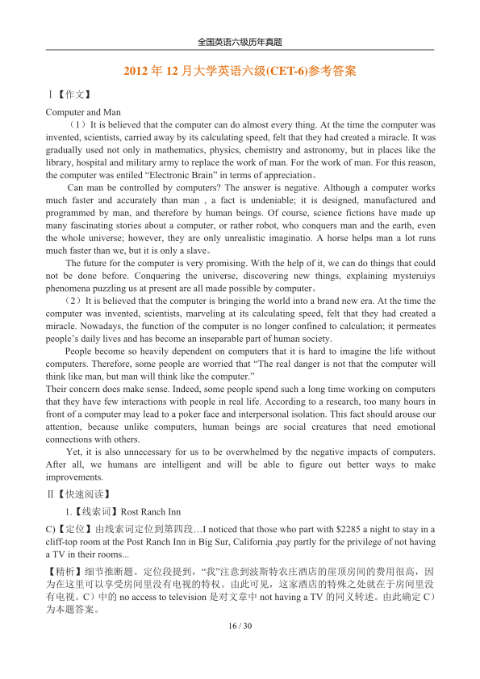
全国英语六级历年真题
16 / 30
2012 年12 月大学英语六级(CET-6)参考答案
Ⅰ【作文】
Computer and Man
（1）It is believed that the computer can do almost every thing. At the time the computer was
invented, scientists, carried away by its calculating speed, felt that they had created a miracle. It was
gradually used not only in mathematics, physics, chemistry and astronomy, but in places like the
library, hospital and military army to replace the work of man. For the work of man. For this reason,
the computer was entiled “Electronic Brain” in terms of appreciation。
Can man be controlled by computers? The answer is negative. Although a computer works
much faster and accurately than man , a fact is undeniable; it is designed, manufactured and
programmed by man, and therefore by human beings. Of course, science fictions have made up
many fascinating stories about a computer, or rather robot, who conquers man and the earth, even
the whole universe; however, they are only unrealistic imaginatio. A horse helps man a lot runs
much faster than we, but it is only a slave。
The future for the computer is very promising. With the help of it, we can do things that could
not be done before. Conquering the universe, discovering new things, explaining mysteruiys
phenomena puzzling us at present are all made possible by computer。
（2）It is believed that the computer is bringing the world into a brand new era. At the time the
computer was invented, scientists, marveling at its calculating speed, felt that they had created a
miracle. Nowadays, the function of the computer is no longer confined to calculation; it permeates
people’s daily lives and has become an inseparable part of human society.
People become so heavily dependent on computers that it is hard to imagine the life without
computers. Therefore, some people are worried that “The real danger is not that the computer will
think like man, but man will think like the computer.”
Their concern does make sense. Indeed, some people spend such a long time working on computers
that they have few interactions with people in real life. According to a research, too many hours in
front of a computer may lead to a poker face and interpersonal isolation. This fact should arouse our
attention, because unlike computers, human beings are social creatures that need emotional
connections with others.
Yet, it is also unnecessary for us to be overwhelmed by the negative impacts of computers.
After all, we humans are intelligent and will be able to figure out better ways to make
improvements.
Ⅱ【快速阅读】
1.【线索词】Rost Ranch Inn
C)【定位】由线索词定位到第四段…I noticed that those who part with $2285 a night to stay in a
cliff-top room at the Post Ranch Inn in Big Sur, California ,pay partly for the privilege of not having
a TV in their rooms...
【精析】细节推断题。定位段提到，“我”注意到波斯特农庄酒店的崖顶房间的费用很高，因
为在这里可以享受房间里没有电视的特权。由此可见，这家酒店的特殊之处就在于房间里没
有电视。C）中的no access to television 是对文章中not having a TV 的同义转述。由此确定C）
为本题答案。
查看 / 复制本页文字
全国英语六级历年真题 16 / 30 2012 年12 月大学英语六级(CET-6)参考答案 Ⅰ【作文】 Computer and Man （1）It is believed that the computer can do almost every thing. At the time the computer was invented, scientists, carried away by its calculating speed, felt that they had created a miracle. It was gradually used not only in mathematics, physics, chemistry and astronomy, but in places like the library, hospital and military army to replace the work of man. For the work of man. For this reason, the computer was entiled “Electronic Brain” in terms of appreciation。 Can man be controlled by computers? The answer is negative. Although a computer works much faster and accurately than man , a fact is undeniable; it is designed, manufactured and programmed by man, and therefore by human beings. Of course, science fictions have made up many fascinating stories about a computer, or rather robot, who conquers man and the earth, even the whole universe; however, they are only unrealistic imaginatio. A horse helps man a lot runs much faster than we, but it is only a slave。 The future for the computer is very promising. With the help of it, we can do things that could not be done before. Conquering the universe, discovering new things, explaining mysteruiys phenomena puzzling us at present are all made possible by computer。 （2）It is believed that the computer is bringing the world into a brand new era. At the time the computer was invented, scientists, marveling at its calculating speed, felt that they had created a miracle. Nowadays, the function of the computer is no longer confined to calculation; it permeates people’s daily lives and has become an inseparable part of human society. People become so heavily dependent on computers that it is hard to imagine the life without computers. Therefore, some people are worried that “The real danger is not that the computer will think like man, but man will think like the computer.” Their concern does make sense. Indeed, some people spend such a long time working on computers that they have few interactions with people in real life. According to a research, too many hours in front of a computer may lead to a poker face and interpersonal isolation. This fact should arouse our attention, because unlike computers, human beings are social creatures that need emotional connections with others. Yet, it is also unnecessary for us to be overwhelmed by the negative impacts of computers. After all, we humans are intelligent and will be able to figure out better ways to make improvements. Ⅱ【快速阅读】 1.【线索词】Rost Ranch Inn C)【定位】由线索词定位到第四段…I noticed that those who part with $2285 a night to stay in a cliff-top room at the Post Ranch Inn in Big Sur, California ,pay partly for the privilege of not having a TV in their rooms... 【精析】细节推断题。定位段提到，“我”注意到波斯特农庄酒店的崖顶房间的费用很高，因 为在这里可以享受房间里没有电视的特权。由此可见，这家酒店的特殊之处就在于房间里没 有电视。C）中的no access to television 是对文章中not having a TV 的同义转述。由此确定C） 为本题答案。
第 17 / 30 页
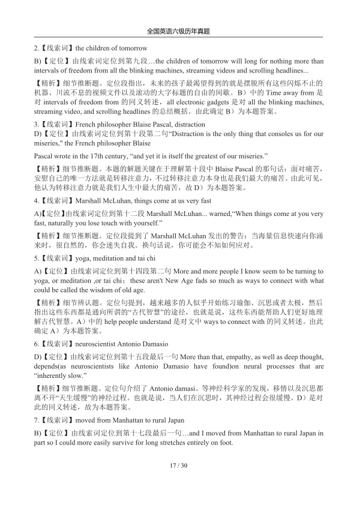
全国英语六级历年真题
17 / 30
2.【线索词】the children of tomorrow
B)【定位】由线索词定位到第九段…the children of tomorrow will long for nothing more than
intervals of freedom from all the blinking machines, streaming videos and scrolling headlines...
【精析】细节推断题。定位段指出，未来的孩子最渴望得到的就是摆脱所有这些闪烁不止的
机器、川流不息的视频文件以及滚动的大字标题的自由的间歇。B）中的Time away from 是
对intervals of freedom from 的同义转述，all electronic gadgets 是对all the blinking machines,
streaming video, and scrolling headlines 的总结概括。由此确定B）为本题答案。
3.【线索词】French philosopher Blaise Pascal, distraction
D)【定位】由线索词定位到第十段第二句“Distraction is the only thing that consoles us for our
miseries," the French philosopher Blaise
Pascal wrote in the 17th century, “and yet it is itself the greatest of our miseries.”
【精析】细节推断题。本题的解题关键在于理解第十段中Blaise Pascal 的那句话：面对痛苦，
安慰自己的唯一方法就是转移注意力，不过转移注意力本身也是我们最大的痛苦。由此可见，
他认为转移注意力就是我们人生中最大的痛苦，故D）为本题答案。
4.【线索词】Marshall McLuhan, things come at us very fast
A)【定位】由线索词定位到第十二段Marshall McLuhan... warned,“When things come at you very
fast, naturally you lose touch with yourself.”
【精析】细节推断题。定位段提到了Marshall McLuhan 发出的警告：当海量信息快速向你涌
来时，很自然的，你会迷失自我。换句话说，你可能会不知如何应对。
5.【线索词】yoga, meditation and tai chi
A)【定位】由线索词定位到第十四段第二句More and more people I know seem to be turning to
yoga, or meditation ,or tai chi；these aren't New Age fads so much as ways to connect with what
could be called the wisdom of old age.
【精析】细节辨认题。定位句提到，越来越多的人似乎开始练习瑜伽、沉思或者太极，然后
指出这些东西都是通向所谓的“古代智慧”的途径，也就是说，这些东西能帮助人们更好地理
解古代智慧。A）中的help people understand 是对文中ways to connect with 的同义转述。由此
确定A）为本题答案。
6.【线索词】neuroscientist Antonio Damasio
D)【定位】由线索词定位到第十五段最后一句More than that, empathy, as well as deep thought,
depends(as neuroscientists like Antonio Damasio have found)on neural processes that are
“inherently slow.”
【精析】细节推断题。定位句介绍了Antonio damasi。等神经科学家的发现，移情以及沉思都
离不开“天生缓慢”的神经过程。也就是说，当人们在沉思时，其神经过程会很缓慢。D）是对
此的同义转述，故为本题答案。
7.【线索词】moved from Manhattan to rural Japan
B)【定位】由线索词定位到第十七段最后一句…and I moved from Manhattan to rural Japan in
part so I could more easily survive for long stretches entirely on foot.
查看 / 复制本页文字
全国英语六级历年真题 17 / 30 2.【线索词】the children of tomorrow B)【定位】由线索词定位到第九段…the children of tomorrow will long for nothing more than intervals of freedom from all the blinking machines, streaming videos and scrolling headlines... 【精析】细节推断题。定位段指出，未来的孩子最渴望得到的就是摆脱所有这些闪烁不止的 机器、川流不息的视频文件以及滚动的大字标题的自由的间歇。B）中的Time away from 是 对intervals of freedom from 的同义转述，all electronic gadgets 是对all the blinking machines, streaming video, and scrolling headlines 的总结概括。由此确定B）为本题答案。 3.【线索词】French philosopher Blaise Pascal, distraction D)【定位】由线索词定位到第十段第二句“Distraction is the only thing that consoles us for our miseries," the French philosopher Blaise Pascal wrote in the 17th century, “and yet it is itself the greatest of our miseries.” 【精析】细节推断题。本题的解题关键在于理解第十段中Blaise Pascal 的那句话：面对痛苦， 安慰自己的唯一方法就是转移注意力，不过转移注意力本身也是我们最大的痛苦。由此可见， 他认为转移注意力就是我们人生中最大的痛苦，故D）为本题答案。 4.【线索词】Marshall McLuhan, things come at us very fast A)【定位】由线索词定位到第十二段Marshall McLuhan... warned,“When things come at you very fast, naturally you lose touch with yourself.” 【精析】细节推断题。定位段提到了Marshall McLuhan 发出的警告：当海量信息快速向你涌 来时，很自然的，你会迷失自我。换句话说，你可能会不知如何应对。 5.【线索词】yoga, meditation and tai chi A)【定位】由线索词定位到第十四段第二句More and more people I know seem to be turning to yoga, or meditation ,or tai chi；these aren't New Age fads so much as ways to connect with what could be called the wisdom of old age. 【精析】细节辨认题。定位句提到，越来越多的人似乎开始练习瑜伽、沉思或者太极，然后 指出这些东西都是通向所谓的“古代智慧”的途径，也就是说，这些东西能帮助人们更好地理 解古代智慧。A）中的help people understand 是对文中ways to connect with 的同义转述。由此 确定A）为本题答案。 6.【线索词】neuroscientist Antonio Damasio D)【定位】由线索词定位到第十五段最后一句More than that, empathy, as well as deep thought, depends(as neuroscientists like Antonio Damasio have found)on neural processes that are “inherently slow.” 【精析】细节推断题。定位句介绍了Antonio damasi。等神经科学家的发现，移情以及沉思都 离不开“天生缓慢”的神经过程。也就是说，当人们在沉思时，其神经过程会很缓慢。D）是对 此的同义转述，故为本题答案。 7.【线索词】moved from Manhattan to rural Japan B)【定位】由线索词定位到第十七段最后一句…and I moved from Manhattan to rural Japan in part so I could more easily survive for long stretches entirely on foot.
第 18 / 30 页
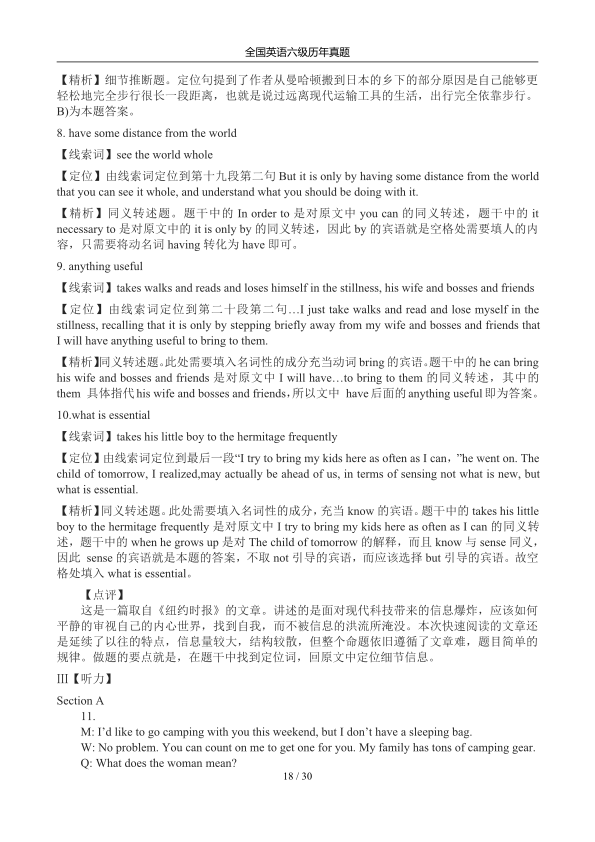
全国英语六级历年真题
18 / 30
【精析】细节推断题。定位句提到了作者从曼哈顿搬到日本的乡下的部分原因是自己能够更
轻松地完全步行很长一段距离，也就是说过远离现代运输工具的生活，出行完全依靠步行。
B)为本题答案。
8. have some distance from the world
【线索词】see the world whole
【定位】由线索词定位到第十九段第二句But it is only by having some distance from the world
that you can see it whole, and understand what you should be doing with it.
【精析】同义转述题。题干中的In order to 是对原文中you can 的同义转述，题干中的it
necessary to 是对原文中的it is only by 的同义转述，因此by 的宾语就是空格处需要填人的内
容，只需要将动名词having 转化为have 即可。
9. anything useful
【线索词】takes walks and reads and loses himself in the stillness, his wife and bosses and friends
【定位】由线索词定位到第二十段第二句…I just take walks and read and lose myself in the
stillness, recalling that it is only by stepping briefly away from my wife and bosses and friends that
I will have anything useful to bring to them.
【精析】同义转述题。此处需要填入名词性的成分充当动词bring 的宾语。题干中的he can bring
his wife and bosses and friends 是对原文中I will have…to bring to them 的同义转述，其中的
them 具体指代his wife and bosses and friends，所以文中have 后面的anything useful 即为答案。
10.what is essential
【线索词】takes his little boy to the hermitage frequently
【定位】由线索词定位到最后一段“I try to bring my kids here as often as I can，”he went on. The
child of tomorrow, I realized,may actually be ahead of us, in terms of sensing not what is new, but
what is essential.
【精析】同义转述题。此处需要填入名词性的成分，充当know 的宾语。题干中的takes his little
boy to the hermitage frequently 是对原文中I try to bring my kids here as often as I can 的同义转
述，题干中的when he grows up 是对The child of tomorrow 的解释，而且know 与sense 同义，
因此sense 的宾语就是本题的答案，不取not 引导的宾语，而应该选择but 引导的宾语。故空
格处填入what is essential。
【点评】
这是一篇取自《纽约时报》的文章。讲述的是面对现代科技带来的信息爆炸，应该如何
平静的审视自己的内心世界，找到自我，而不被信息的洪流所淹没。本次快速阅读的文章还
是延续了以往的特点，信息量较大，结构较散，但整个命题依旧遵循了文章难，题目简单的
规律。做题的要点就是，在题干中找到定位词，回原文中定位细节信息。
Ⅲ【听力】
Section A
11.
M: I’d like to go camping with you this weekend, but I don’t have a sleeping bag.
W: No problem. You can count on me to get one for you. My family has tons of camping gear.
Q: What does the woman mean?
查看 / 复制本页文字
全国英语六级历年真题 18 / 30 【精析】细节推断题。定位句提到了作者从曼哈顿搬到日本的乡下的部分原因是自己能够更 轻松地完全步行很长一段距离，也就是说过远离现代运输工具的生活，出行完全依靠步行。 B)为本题答案。 8. have some distance from the world 【线索词】see the world whole 【定位】由线索词定位到第十九段第二句But it is only by having some distance from the world that you can see it whole, and understand what you should be doing with it. 【精析】同义转述题。题干中的In order to 是对原文中you can 的同义转述，题干中的it necessary to 是对原文中的it is only by 的同义转述，因此by 的宾语就是空格处需要填人的内 容，只需要将动名词having 转化为have 即可。 9. anything useful 【线索词】takes walks and reads and loses himself in the stillness, his wife and bosses and friends 【定位】由线索词定位到第二十段第二句…I just take walks and read and lose myself in the stillness, recalling that it is only by stepping briefly away from my wife and bosses and friends that I will have anything useful to bring to them. 【精析】同义转述题。此处需要填入名词性的成分充当动词bring 的宾语。题干中的he can bring his wife and bosses and friends 是对原文中I will have…to bring to them 的同义转述，其中的 them 具体指代his wife and bosses and friends，所以文中have 后面的anything useful 即为答案。 10.what is essential 【线索词】takes his little boy to the hermitage frequently 【定位】由线索词定位到最后一段“I try to bring my kids here as often as I can，”he went on. The child of tomorrow, I realized,may actually be ahead of us, in terms of sensing not what is new, but what is essential. 【精析】同义转述题。此处需要填入名词性的成分，充当know 的宾语。题干中的takes his little boy to the hermitage frequently 是对原文中I try to bring my kids here as often as I can 的同义转 述，题干中的when he grows up 是对The child of tomorrow 的解释，而且know 与sense 同义， 因此sense 的宾语就是本题的答案，不取not 引导的宾语，而应该选择but 引导的宾语。故空 格处填入what is essential。 【点评】 这是一篇取自《纽约时报》的文章。讲述的是面对现代科技带来的信息爆炸，应该如何 平静的审视自己的内心世界，找到自我，而不被信息的洪流所淹没。本次快速阅读的文章还 是延续了以往的特点，信息量较大，结构较散，但整个命题依旧遵循了文章难，题目简单的 规律。做题的要点就是，在题干中找到定位词，回原文中定位细节信息。 Ⅲ【听力】 Section A 11. M: I’d like to go camping with you this weekend, but I don’t have a sleeping bag. W: No problem. You can count on me to get one for you. My family has tons of camping gear. Q: What does the woman mean?
第 19 / 30 页
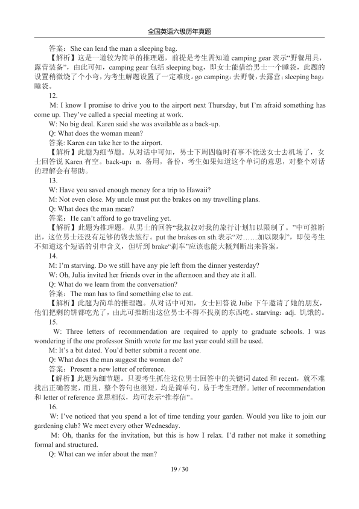
全国英语六级历年真题
19 / 30
答案：She can lend the man a sleeping bag.
【解析】这是一道较为简单的推理题，前提是考生需知道camping gear 表示“野餐用具，
露营装备”，由此可知，camping gear 包括sleeping bag，即女士能借给男士一个睡袋，此题的
设置稍微绕了个小弯，为考生解题设置了一定难度。go camping：去野餐，去露营；sleeping bag：
睡袋。
12.
M: I know I promise to drive you to the airport next Thursday, but I’m afraid something has
come up. They’ve called a special meeting at work.
W: No big deal. Karen said she was available as a back-up.
Q: What does the woman mean?
答案: Karen can take her to the airport.
【解析】此题为细节题。从对话中可知，男士下周四临时有事不能送女士去机场了，女
士回答说Karen 有空。back-up：n. 备用，备份，考生如果知道这个单词的意思，对整个对话
的理解会有帮助。
13.
W: Have you saved enough money for a trip to Hawaii?
M: Not even close. My uncle must put the brakes on my travelling plans.
Q: What does the man mean?
答案：He can’t afford to go traveling yet.
【解析】此题为推理题。从男士的回答“我叔叔对我的旅行计划加以限制了。”中可推断
出，这位男士还没有足够的钱去旅行。put the brakes on sth.表示“对……加以限制”，即使考生
不知道这个短语的引申含义，但听到brake“刹车”应该也能大概判断出来答案。
14.
M: I’m starving. Do we still have any pie left from the dinner yesterday?
W: Oh, Julia invited her friends over in the afternoon and they ate it all.
Q: What do we learn from the conversation?
答案：The man has to find something else to eat.
【解析】此题为简单的推理题。从对话中可知，女士回答说Julie 下午邀请了她的朋友，
他们把剩的饼都吃光了，由此可推断出这位男士不得不找别的东西吃。starving：adj. 饥饿的。
15.
W: Three letters of recommendation are required to apply to graduate schools. I was
wondering if the one professor Smith wrote for me last year could still be used.
M: It’s a bit dated. You’d better submit a recent one.
Q: What does the man suggest the woman do?
答案：Present a new letter of reference.
【解析】此题为细节题。只要考生抓住这位男士回答中的关键词dated 和recent，就不难
找出正确答案，而且，整个答句也很短，均是简单句，易于考生理解。letter of recommendation
和letter of reference 意思相似，均可表示“推荐信”。
16.
W: I’ve noticed that you spend a lot of time tending your garden. Would you like to join our
gardening club? We meet every other Wednesday.
M: Oh, thanks for the invitation, but this is how I relax. I’d rather not make it something
formal and structured.
Q: What can we infer about the man?
查看 / 复制本页文字
全国英语六级历年真题 19 / 30 答案：She can lend the man a sleeping bag. 【解析】这是一道较为简单的推理题，前提是考生需知道camping gear 表示“野餐用具， 露营装备”，由此可知，camping gear 包括sleeping bag，即女士能借给男士一个睡袋，此题的 设置稍微绕了个小弯，为考生解题设置了一定难度。go camping：去野餐，去露营；sleeping bag： 睡袋。 12. M: I know I promise to drive you to the airport next Thursday, but I’m afraid something has come up. They’ve called a special meeting at work. W: No big deal. Karen said she was available as a back-up. Q: What does the woman mean? 答案: Karen can take her to the airport. 【解析】此题为细节题。从对话中可知，男士下周四临时有事不能送女士去机场了，女 士回答说Karen 有空。back-up：n. 备用，备份，考生如果知道这个单词的意思，对整个对话 的理解会有帮助。 13. W: Have you saved enough money for a trip to Hawaii? M: Not even close. My uncle must put the brakes on my travelling plans. Q: What does the man mean? 答案：He can’t afford to go traveling yet. 【解析】此题为推理题。从男士的回答“我叔叔对我的旅行计划加以限制了。”中可推断 出，这位男士还没有足够的钱去旅行。put the brakes on sth.表示“对……加以限制”，即使考生 不知道这个短语的引申含义，但听到brake“刹车”应该也能大概判断出来答案。 14. M: I’m starving. Do we still have any pie left from the dinner yesterday? W: Oh, Julia invited her friends over in the afternoon and they ate it all. Q: What do we learn from the conversation? 答案：The man has to find something else to eat. 【解析】此题为简单的推理题。从对话中可知，女士回答说Julie 下午邀请了她的朋友， 他们把剩的饼都吃光了，由此可推断出这位男士不得不找别的东西吃。starving：adj. 饥饿的。 15. W: Three letters of recommendation are required to apply to graduate schools. I was wondering if the one professor Smith wrote for me last year could still be used. M: It’s a bit dated. You’d better submit a recent one. Q: What does the man suggest the woman do? 答案：Present a new letter of reference. 【解析】此题为细节题。只要考生抓住这位男士回答中的关键词dated 和recent，就不难 找出正确答案，而且，整个答句也很短，均是简单句，易于考生理解。letter of recommendation 和letter of reference 意思相似，均可表示“推荐信”。 16. W: I’ve noticed that you spend a lot of time tending your garden. Would you like to join our gardening club? We meet every other Wednesday. M: Oh, thanks for the invitation, but this is how I relax. I’d rather not make it something formal and structured. Q: What can we infer about the man?
第 20 / 30 页
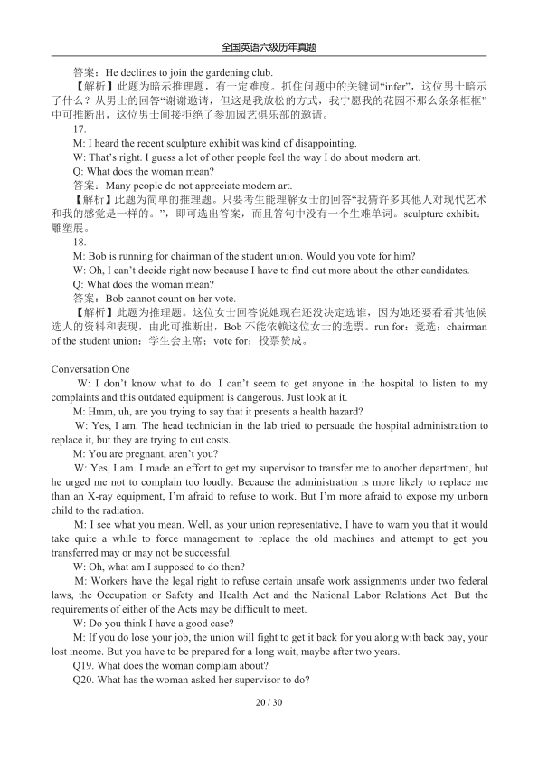
全国英语六级历年真题
20 / 30
答案：He declines to join the gardening club.
【解析】此题为暗示推理题，有一定难度。抓住问题中的关键词“infer”，这位男士暗示
了什么？从男士的回答“谢谢邀请，但这是我放松的方式，我宁愿我的花园不那么条条框框”
中可推断出，这位男士间接拒绝了参加园艺俱乐部的邀请。
17.
M: I heard the recent sculpture exhibit was kind of disappointing.
W: That’s right. I guess a lot of other people feel the way I do about modern art.
Q: What does the woman mean?
答案：Many people do not appreciate modern art.
【解析】此题为简单的推理题。只要考生能理解女士的回答“我猜许多其他人对现代艺术
和我的感觉是一样的。”，即可选出答案，而且答句中没有一个生难单词。sculpture exhibit：
雕塑展。
18.
M: Bob is running for chairman of the student union. Would you vote for him?
W: Oh, I can’t decide right now because I have to find out more about the other candidates.
Q: What does the woman mean?
答案：Bob cannot count on her vote.
【解析】此题为推理题。这位女士回答说她现在还没决定选谁，因为她还要看看其他候
选人的资料和表现，由此可推断出，Bob 不能依赖这位女士的选票。run for：竞选；chairman
of the student union：学生会主席；vote for：投票赞成。
Conversation One
W: I don’t know what to do. I can’t seem to get anyone in the hospital to listen to my
complaints and this outdated equipment is dangerous. Just look at it.
M: Hmm, uh, are you trying to say that it presents a health hazard?
W: Yes, I am. The head technician in the lab tried to persuade the hospital administration to
replace it, but they are trying to cut costs.
M: You are pregnant, aren’t you?
W: Yes, I am. I made an effort to get my supervisor to transfer me to another department, but
he urged me not to complain too loudly. Because the administration is more likely to replace me
than an X-ray equipment, I’m afraid to refuse to work. But I’m more afraid to expose my unborn
child to the radiation.
M: I see what you mean. Well, as your union representative, I have to warn you that it would
take quite a while to force management to replace the old machines and attempt to get you
transferred may or may not be successful.
W: Oh, what am I supposed to do then?
M: Workers have the legal right to refuse certain unsafe work assignments under two federal
laws, the Occupation or Safety and Health Act and the National Labor Relations Act. But the
requirements of either of the Acts may be difficult to meet.
W: Do you think I have a good case?
M: If you do lose your job, the union will fight to get it back for you along with back pay, your
lost income. But you have to be prepared for a long wait, maybe after two years.
Q19. What does the woman complain about?
Q20. What has the woman asked her supervisor to do?
查看 / 复制本页文字
全国英语六级历年真题 20 / 30 答案：He declines to join the gardening club. 【解析】此题为暗示推理题，有一定难度。抓住问题中的关键词“infer”，这位男士暗示 了什么？从男士的回答“谢谢邀请，但这是我放松的方式，我宁愿我的花园不那么条条框框” 中可推断出，这位男士间接拒绝了参加园艺俱乐部的邀请。 17. M: I heard the recent sculpture exhibit was kind of disappointing. W: That’s right. I guess a lot of other people feel the way I do about modern art. Q: What does the woman mean? 答案：Many people do not appreciate modern art. 【解析】此题为简单的推理题。只要考生能理解女士的回答“我猜许多其他人对现代艺术 和我的感觉是一样的。”，即可选出答案，而且答句中没有一个生难单词。sculpture exhibit： 雕塑展。 18. M: Bob is running for chairman of the student union. Would you vote for him? W: Oh, I can’t decide right now because I have to find out more about the other candidates. Q: What does the woman mean? 答案：Bob cannot count on her vote. 【解析】此题为推理题。这位女士回答说她现在还没决定选谁，因为她还要看看其他候 选人的资料和表现，由此可推断出，Bob 不能依赖这位女士的选票。run for：竞选；chairman of the student union：学生会主席；vote for：投票赞成。 Conversation One W: I don’t know what to do. I can’t seem to get anyone in the hospital to listen to my complaints and this outdated equipment is dangerous. Just look at it. M: Hmm, uh, are you trying to say that it presents a health hazard? W: Yes, I am. The head technician in the lab tried to persuade the hospital administration to replace it, but they are trying to cut costs. M: You are pregnant, aren’t you? W: Yes, I am. I made an effort to get my supervisor to transfer me to another department, but he urged me not to complain too loudly. Because the administration is more likely to replace me than an X-ray equipment, I’m afraid to refuse to work. But I’m more afraid to expose my unborn child to the radiation. M: I see what you mean. Well, as your union representative, I have to warn you that it would take quite a while to force management to replace the old machines and attempt to get you transferred may or may not be successful. W: Oh, what am I supposed to do then? M: Workers have the legal right to refuse certain unsafe work assignments under two federal laws, the Occupation or Safety and Health Act and the National Labor Relations Act. But the requirements of either of the Acts may be difficult to meet. W: Do you think I have a good case? M: If you do lose your job, the union will fight to get it back for you along with back pay, your lost income. But you have to be prepared for a long wait, maybe after two years. Q19. What does the woman complain about? Q20. What has the woman asked her supervisor to do?
第 21 / 30 页
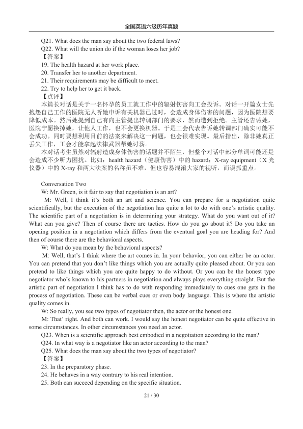
全国英语六级历年真题
21 / 30
Q21. What does the man say about the two federal laws?
Q22. What will the union do if the woman loses her job?
【答案】
19. The health hazard at her work place.
20. Transfer her to another department.
21. Their requirements may be difficult to meet.
22. Try to help her to get it back.
【点评】
本篇长对话是关于一名怀孕的员工就工作中的辐射伤害向工会投诉。对话一开篇女士先
抱怨自己工作的医院无人听她申诉有关机器已过时，会造成身体伤害的问题，因为医院想要
降低成本。然后她提到自己有向主管提出转调部门的要求，然而遭到拒绝。主管还告诫她，
医院宁愿换掉她，让他人工作，也不会更换机器。于是工会代表告诉她转调部门确实可能不
会成功。同时要想利用目前的法案来解决这一问题，也会很难实现。最后指出，除非她真正
丢失工作，工会才能拿起法律武器帮她讨薪。
本对话考生虽然对辐射造成身体伤害的话题并不陌生，但整个对话中部分单词可能还是
会造成不少听力困扰。比如：health hazard（健康伤害）中的hazard；X-ray equipment（X 光
仪器）中的X-ray 和两大法案的名称虽不难，但也容易混淆大家的视听，而误抓重点。
Conversation Two
W: Mr. Green, is it fair to say that negotiation is an art?
M: Well, I think it’s both an art and science. You can prepare for a negotiation quite
scientifically, but the execution of the negotiation has quite a lot to do with one’s artistic quality.
The scientific part of a negotiation is in determining your strategy. What do you want out of it?
What can you give? Then of course there are tactics. How do you go about it? Do you take an
opening position in a negotiation which differs from the eventual goal you are heading for? And
then of course there are the behavioral aspects.
W: What do you mean by the behavioral aspects?
M: Well, that’s I think where the art comes in. In your behavior, you can either be an actor.
You can pretend that you don’t like things which you are actually quite pleased about. Or you can
pretend to like things which you are quite happy to do without. Or you can be the honest type
negotiator who’s known to his partners in negotiation and always plays everything straight. But the
artistic part of negotiation I think has to do with responding immediately to cues one gets in the
process of negotiation. These can be verbal cues or even body language. This is where the artistic
quality comes in.
W: So really, you see two types of negotiator then, the actor or the honest one.
M: That’ right. And both can work. I would say the honest negotiator can be quite effective in
some circumstances. In other circumstances you need an actor.
Q23. When is a scientific approach best embodied in a negotiation according to the man?
Q24. In what way is a negotiator like an actor according to the man?
Q25. What does the man say about the two types of negotiator?
【答案】
23. In the preparatory phase.
24. He behaves in a way contrary to his real intention.
25. Both can succeed depending on the specific situation.
查看 / 复制本页文字
全国英语六级历年真题 21 / 30 Q21. What does the man say about the two federal laws? Q22. What will the union do if the woman loses her job? 【答案】 19. The health hazard at her work place. 20. Transfer her to another department. 21. Their requirements may be difficult to meet. 22. Try to help her to get it back. 【点评】 本篇长对话是关于一名怀孕的员工就工作中的辐射伤害向工会投诉。对话一开篇女士先 抱怨自己工作的医院无人听她申诉有关机器已过时，会造成身体伤害的问题，因为医院想要 降低成本。然后她提到自己有向主管提出转调部门的要求，然而遭到拒绝。主管还告诫她， 医院宁愿换掉她，让他人工作，也不会更换机器。于是工会代表告诉她转调部门确实可能不 会成功。同时要想利用目前的法案来解决这一问题，也会很难实现。最后指出，除非她真正 丢失工作，工会才能拿起法律武器帮她讨薪。 本对话考生虽然对辐射造成身体伤害的话题并不陌生，但整个对话中部分单词可能还是 会造成不少听力困扰。比如：health hazard（健康伤害）中的hazard；X-ray equipment（X 光 仪器）中的X-ray 和两大法案的名称虽不难，但也容易混淆大家的视听，而误抓重点。 Conversation Two W: Mr. Green, is it fair to say that negotiation is an art? M: Well, I think it’s both an art and science. You can prepare for a negotiation quite scientifically, but the execution of the negotiation has quite a lot to do with one’s artistic quality. The scientific part of a negotiation is in determining your strategy. What do you want out of it? What can you give? Then of course there are tactics. How do you go about it? Do you take an opening position in a negotiation which differs from the eventual goal you are heading for? And then of course there are the behavioral aspects. W: What do you mean by the behavioral aspects? M: Well, that’s I think where the art comes in. In your behavior, you can either be an actor. You can pretend that you don’t like things which you are actually quite pleased about. Or you can pretend to like things which you are quite happy to do without. Or you can be the honest type negotiator who’s known to his partners in negotiation and always plays everything straight. But the artistic part of negotiation I think has to do with responding immediately to cues one gets in the process of negotiation. These can be verbal cues or even body language. This is where the artistic quality comes in. W: So really, you see two types of negotiator then, the actor or the honest one. M: That’ right. And both can work. I would say the honest negotiator can be quite effective in some circumstances. In other circumstances you need an actor. Q23. When is a scientific approach best embodied in a negotiation according to the man? Q24. In what way is a negotiator like an actor according to the man? Q25. What does the man say about the two types of negotiator? 【答案】 23. In the preparatory phase. 24. He behaves in a way contrary to his real intention. 25. Both can succeed depending on the specific situation.
第 22 / 30 页
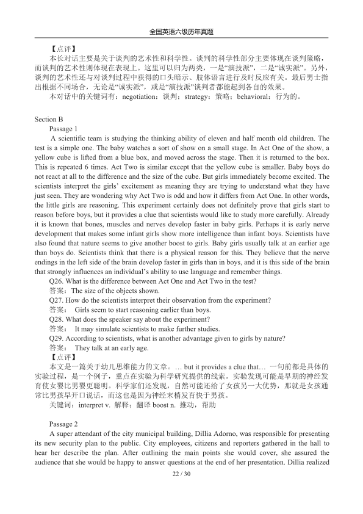
全国英语六级历年真题
22 / 30
【点评】
本长对话主要是关于谈判的艺术性和科学性。谈判的科学性部分主要体现在谈判策略，
而谈判的艺术性则体现在表现上。这里可以归为两类，一是“演技派”，二是“诚实派”。另外，
谈判的艺术性还与对谈判过程中获得的口头暗示、肢体语言进行及时反应有关。最后男士指
出根据不同场合，无论是“诚实派”，或是“演技派”谈判者都能起到各自的效果。
本对话中的关键词有：negotiation：谈判；strategy：策略；behavioral：行为的。
Section B
Passage 1
A scientific team is studying the thinking ability of eleven and half month old children. The
test is a simple one. The baby watches a sort of show on a small stage. In Act One of the show, a
yellow cube is lifted from a blue box, and moved across the stage. Then it is returned to the box.
This is repeated 6 times. Act Two is similar except that the yellow cube is smaller. Baby boys do
not react at all to the difference and the size of the cube. But girls immediately become excited. The
scientists interpret the girls’ excitement as meaning they are trying to understand what they have
just seen. They are wondering why Act Two is odd and how it differs from Act One. In other words,
the little girls are reasoning. This experiment certainly does not definitely prove that girls start to
reason before boys, but it provides a clue that scientists would like to study more carefully. Already
it is known that bones, muscles and nerves develop faster in baby girls. Perhaps it is early nerve
development that makes some infant girls show more intelligence than infant boys. Scientists have
also found that nature seems to give another boost to girls. Baby girls usually talk at an earlier age
than boys do. Scientists think that there is a physical reason for this. They believe that the nerve
endings in the left side of the brain develop faster in girls than in boys, and it is this side of the brain
that strongly influences an individual’s ability to use language and remember things.
Q26. What is the difference between Act One and Act Two in the test?
答案：The size of the objects shown.
Q27. How do the scientists interpret their observation from the experiment?
答案：Girls seem to start reasoning earlier than boys.
Q28. What does the speaker say about the experiment?
答案：It may simulate scientists to make further studies.
Q29. According to scientists, what is another advantage given to girls by nature?
答案：They talk at an early age.
【点评】
本文是一篇关于幼儿思维能力的文章。… but it provides a clue that… 一句前都是具体的
实验过程，是一个例子，重点在实验为科学研究提供的线索。实验发现可能是早期的神经发
育使女婴比男婴更聪明。科学家们还发现，自然可能还给了女孩另一大优势，那就是女孩通
常比男孩早开口说话，而这也是因为神经末梢发育快于男孩。
关键词：interpret v. 解释；翻译boost n. 推动，帮助
Passage 2
A super attendant of the city municipal building, Dillia Adorno, was responsible for presenting
its new security plan to the public. City employees, citizens and reporters gathered in the hall to
hear her describe the plan. After outlining the main points she would cover, she assured the
audience that she would be happy to answer questions at the end of her presentation. Dillia realized
查看 / 复制本页文字
全国英语六级历年真题 22 / 30 【点评】 本长对话主要是关于谈判的艺术性和科学性。谈判的科学性部分主要体现在谈判策略， 而谈判的艺术性则体现在表现上。这里可以归为两类，一是“演技派”，二是“诚实派”。另外， 谈判的艺术性还与对谈判过程中获得的口头暗示、肢体语言进行及时反应有关。最后男士指 出根据不同场合，无论是“诚实派”，或是“演技派”谈判者都能起到各自的效果。 本对话中的关键词有：negotiation：谈判；strategy：策略；behavioral：行为的。 Section B Passage 1 A scientific team is studying the thinking ability of eleven and half month old children. The test is a simple one. The baby watches a sort of show on a small stage. In Act One of the show, a yellow cube is lifted from a blue box, and moved across the stage. Then it is returned to the box. This is repeated 6 times. Act Two is similar except that the yellow cube is smaller. Baby boys do not react at all to the difference and the size of the cube. But girls immediately become excited. The scientists interpret the girls’ excitement as meaning they are trying to understand what they have just seen. They are wondering why Act Two is odd and how it differs from Act One. In other words, the little girls are reasoning. This experiment certainly does not definitely prove that girls start to reason before boys, but it provides a clue that scientists would like to study more carefully. Already it is known that bones, muscles and nerves develop faster in baby girls. Perhaps it is early nerve development that makes some infant girls show more intelligence than infant boys. Scientists have also found that nature seems to give another boost to girls. Baby girls usually talk at an earlier age than boys do. Scientists think that there is a physical reason for this. They believe that the nerve endings in the left side of the brain develop faster in girls than in boys, and it is this side of the brain that strongly influences an individual’s ability to use language and remember things. Q26. What is the difference between Act One and Act Two in the test? 答案：The size of the objects shown. Q27. How do the scientists interpret their observation from the experiment? 答案：Girls seem to start reasoning earlier than boys. Q28. What does the speaker say about the experiment? 答案：It may simulate scientists to make further studies. Q29. According to scientists, what is another advantage given to girls by nature? 答案：They talk at an early age. 【点评】 本文是一篇关于幼儿思维能力的文章。… but it provides a clue that… 一句前都是具体的 实验过程，是一个例子，重点在实验为科学研究提供的线索。实验发现可能是早期的神经发 育使女婴比男婴更聪明。科学家们还发现，自然可能还给了女孩另一大优势，那就是女孩通 常比男孩早开口说话，而这也是因为神经末梢发育快于男孩。 关键词：interpret v. 解释；翻译boost n. 推动，帮助 Passage 2 A super attendant of the city municipal building, Dillia Adorno, was responsible for presenting its new security plan to the public. City employees, citizens and reporters gathered in the hall to hear her describe the plan. After outlining the main points she would cover, she assured the audience that she would be happy to answer questions at the end of her presentation. Dillia realized
第 23 / 30 页
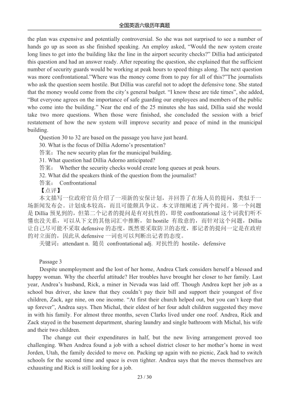
全国英语六级历年真题
23 / 30
the plan was expensive and potentially controversial. So she was not surprised to see a number of
hands go up as soon as she finished speaking. An employ asked, “Would the new system create
long lines to get into the building like the line in the airport security checks?” Dillia had anticipated
this question and had an answer ready. After repeating the question, she explained that the sufficient
number of security guards would be working at peak hours to speed things along. The next question
was more confrontational.”Where was the money come from to pay for all of this?”The journalists
who ask the question seem hostile. But Dillia was careful not to adopt the defensive tone. She stated
that the money would come from the city’s general budget. “I know these are tide times”, she added,
“But everyone agrees on the importance of safe guarding our employees and members of the public
who come into the building.” Near the end of the 25 minutes she has said, Dillia said she would
take two more questions. When those were finished, she concluded the session with a brief
restatement of how the new system will improve security and peace of mind in the municipal
building.
Question 30 to 32 are based on the passage you have just heard.
30. What is the focus of Dillia Adorno’s presentation?
答案：The new security plan for the municipal building.
31. What question had Dillia Adorno anticipated?
答案：Whether the security checks would create long queues at peak hours.
32. What did the speakers think of the question from the journalist?
答案：Confrontational
【点评】
本文描写一位政府官员介绍了一项新的安保计划，并回答了在场人员的提问，类似于一
场新闻发布会。计划成本较高，而且可能颇具争议。本文详细阐述了两个提问。第一个问题
是Dillia 预见到的，但第二个记者的提问是有对抗性的，即使confrontational 这个词我们听不
懂也没关系，可以从下文的其他词汇中推断，如hostile 有敌意的，而针对这个问题，Dillia
让自己尽可能不采取defensive 的态度，既然要采取防卫的态度，那记者的提问一定是在政府
的对立面的，因此从defensive 一词也可以判断出记者的态度。
关键词：attendant n. 随员confrontational adj. 对抗性的hostile，defensive
Passage 3
Despite unemployment and the lost of her home, Andrea Clark considers herself a blessed and
happy woman. Why the cheerful attitude? Her troubles have brought her closer to her family. Last
year, Andrea’s husband, Rick, a miner in Nevada was laid off. Though Andrea kept her job as a
school bus driver, she knew that they couldn’t pay their bill and support their youngest of five
children, Zack, age nine, on one income. “At first their church helped out, but you can’t keep that
up forever”, Andrea says. Then Michal, their eldest of her four adult children suggested they move
in with his family. For almost three months, seven Clarks lived under one roof. Andrea, Rick and
Zack stayed in the basement department, sharing laundry and single bathroom with Michal, his wife
and their two children.
The change cut their expenditures in half, but the new living arrangement proved too
challenging. When Andrea found a job with a school district closer to her mother’s home in west
Jorden, Utah, the family decided to move on. Packing up again with no picnic, Zack had to switch
schools for the second time and space is even tighter. Andrea says that the moves themselves are
exhausting and Rick is still looking for a job.
查看 / 复制本页文字
全国英语六级历年真题 23 / 30 the plan was expensive and potentially controversial. So she was not surprised to see a number of hands go up as soon as she finished speaking. An employ asked, “Would the new system create long lines to get into the building like the line in the airport security checks?” Dillia had anticipated this question and had an answer ready. After repeating the question, she explained that the sufficient number of security guards would be working at peak hours to speed things along. The next question was more confrontational.”Where was the money come from to pay for all of this?”The journalists who ask the question seem hostile. But Dillia was careful not to adopt the defensive tone. She stated that the money would come from the city’s general budget. “I know these are tide times”, she added, “But everyone agrees on the importance of safe guarding our employees and members of the public who come into the building.” Near the end of the 25 minutes she has said, Dillia said she would take two more questions. When those were finished, she concluded the session with a brief restatement of how the new system will improve security and peace of mind in the municipal building. Question 30 to 32 are based on the passage you have just heard. 30. What is the focus of Dillia Adorno’s presentation? 答案：The new security plan for the municipal building. 31. What question had Dillia Adorno anticipated? 答案：Whether the security checks would create long queues at peak hours. 32. What did the speakers think of the question from the journalist? 答案：Confrontational 【点评】 本文描写一位政府官员介绍了一项新的安保计划，并回答了在场人员的提问，类似于一 场新闻发布会。计划成本较高，而且可能颇具争议。本文详细阐述了两个提问。第一个问题 是Dillia 预见到的，但第二个记者的提问是有对抗性的，即使confrontational 这个词我们听不 懂也没关系，可以从下文的其他词汇中推断，如hostile 有敌意的，而针对这个问题，Dillia 让自己尽可能不采取defensive 的态度，既然要采取防卫的态度，那记者的提问一定是在政府 的对立面的，因此从defensive 一词也可以判断出记者的态度。 关键词：attendant n. 随员confrontational adj. 对抗性的hostile，defensive Passage 3 Despite unemployment and the lost of her home, Andrea Clark considers herself a blessed and happy woman. Why the cheerful attitude? Her troubles have brought her closer to her family. Last year, Andrea’s husband, Rick, a miner in Nevada was laid off. Though Andrea kept her job as a school bus driver, she knew that they couldn’t pay their bill and support their youngest of five children, Zack, age nine, on one income. “At first their church helped out, but you can’t keep that up forever”, Andrea says. Then Michal, their eldest of her four adult children suggested they move in with his family. For almost three months, seven Clarks lived under one roof. Andrea, Rick and Zack stayed in the basement department, sharing laundry and single bathroom with Michal, his wife and their two children. The change cut their expenditures in half, but the new living arrangement proved too challenging. When Andrea found a job with a school district closer to her mother’s home in west Jorden, Utah, the family decided to move on. Packing up again with no picnic, Zack had to switch schools for the second time and space is even tighter. Andrea says that the moves themselves are exhausting and Rick is still looking for a job.
第 24 / 30 页
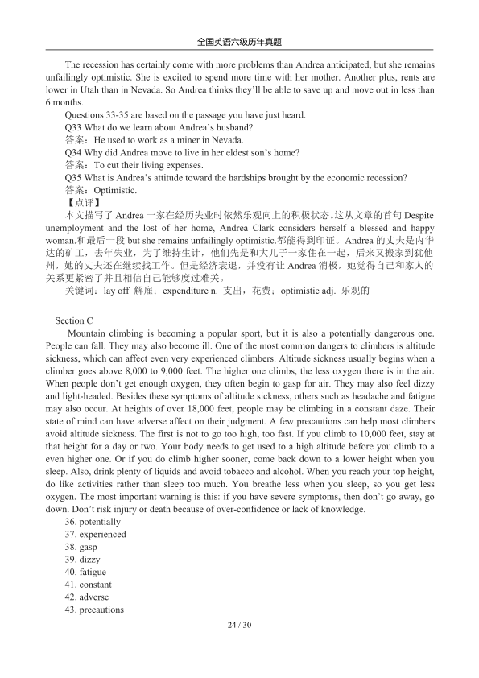
全国英语六级历年真题
24 / 30
The recession has certainly come with more problems than Andrea anticipated, but she remains
unfailingly optimistic. She is excited to spend more time with her mother. Another plus, rents are
lower in Utah than in Nevada. So Andrea thinks they’ll be able to save up and move out in less than
6 months.
Questions 33-35 are based on the passage you have just heard.
Q33 What do we learn about Andrea’s husband?
答案：He used to work as a miner in Nevada.
Q34 Why did Andrea move to live in her eldest son’s home?
答案：To cut their living expenses.
Q35 What is Andrea’s attitude toward the hardships brought by the economic recession?
答案：Optimistic.
【点评】
本文描写了Andrea 一家在经历失业时依然乐观向上的积极状态。这从文章的首句Despite
unemployment and the lost of her home, Andrea Clark considers herself a blessed and happy
woman.和最后一段but she remains unfailingly optimistic.都能得到印证。Andrea 的丈夫是内华
达的矿工，去年失业，为了维持生计，他们先是和大儿子一家住在一起，后来又搬家到犹他
州，她的丈夫还在继续找工作。但是经济衰退，并没有让Andrea 消极，她觉得自己和家人的
关系更紧密了并且相信自己能够度过难关。
关键词：lay off 解雇；expenditure n. 支出，花费；optimistic adj. 乐观的
Section C
Mountain climbing is becoming a popular sport, but it is also a potentially dangerous one.
People can fall. They may also become ill. One of the most common dangers to climbers is altitude
sickness, which can affect even very experienced climbers. Altitude sickness usually begins when a
climber goes above 8,000 to 9,000 feet. The higher one climbs, the less oxygen there is in the air.
When people don’t get enough oxygen, they often begin to gasp for air. They may also feel dizzy
and light-headed. Besides these symptoms of altitude sickness, others such as headache and fatigue
may also occur. At heights of over 18,000 feet, people may be climbing in a constant daze. Their
state of mind can have adverse affect on their judgment. A few precautions can help most climbers
avoid altitude sickness. The first is not to go too high, too fast. If you climb to 10,000 feet, stay at
that height for a day or two. Your body needs to get used to a high altitude before you climb to a
even higher one. Or if you do climb higher sooner, come back down to a lower height when you
sleep. Also, drink plenty of liquids and avoid tobacco and alcohol. When you reach your top height,
do like activities rather than sleep too much. You breathe less when you sleep, so you get less
oxygen. The most important warning is this: if you have severe symptoms, then don’t go away, go
down. Don’t risk injury or death because of over-confidence or lack of knowledge.
36. potentially
37. experienced
38. gasp
39. dizzy
40. fatigue
41. constant
42. adverse
43. precautions
查看 / 复制本页文字
全国英语六级历年真题 24 / 30 The recession has certainly come with more problems than Andrea anticipated, but she remains unfailingly optimistic. She is excited to spend more time with her mother. Another plus, rents are lower in Utah than in Nevada. So Andrea thinks they’ll be able to save up and move out in less than 6 months. Questions 33-35 are based on the passage you have just heard. Q33 What do we learn about Andrea’s husband? 答案：He used to work as a miner in Nevada. Q34 Why did Andrea move to live in her eldest son’s home? 答案：To cut their living expenses. Q35 What is Andrea’s attitude toward the hardships brought by the economic recession? 答案：Optimistic. 【点评】 本文描写了Andrea 一家在经历失业时依然乐观向上的积极状态。这从文章的首句Despite unemployment and the lost of her home, Andrea Clark considers herself a blessed and happy woman.和最后一段but she remains unfailingly optimistic.都能得到印证。Andrea 的丈夫是内华 达的矿工，去年失业，为了维持生计，他们先是和大儿子一家住在一起，后来又搬家到犹他 州，她的丈夫还在继续找工作。但是经济衰退，并没有让Andrea 消极，她觉得自己和家人的 关系更紧密了并且相信自己能够度过难关。 关键词：lay off 解雇；expenditure n. 支出，花费；optimistic adj. 乐观的 Section C Mountain climbing is becoming a popular sport, but it is also a potentially dangerous one. People can fall. They may also become ill. One of the most common dangers to climbers is altitude sickness, which can affect even very experienced climbers. Altitude sickness usually begins when a climber goes above 8,000 to 9,000 feet. The higher one climbs, the less oxygen there is in the air. When people don’t get enough oxygen, they often begin to gasp for air. They may also feel dizzy and light-headed. Besides these symptoms of altitude sickness, others such as headache and fatigue may also occur. At heights of over 18,000 feet, people may be climbing in a constant daze. Their state of mind can have adverse affect on their judgment. A few precautions can help most climbers avoid altitude sickness. The first is not to go too high, too fast. If you climb to 10,000 feet, stay at that height for a day or two. Your body needs to get used to a high altitude before you climb to a even higher one. Or if you do climb higher sooner, come back down to a lower height when you sleep. Also, drink plenty of liquids and avoid tobacco and alcohol. When you reach your top height, do like activities rather than sleep too much. You breathe less when you sleep, so you get less oxygen. The most important warning is this: if you have severe symptoms, then don’t go away, go down. Don’t risk injury or death because of over-confidence or lack of knowledge. 36. potentially 37. experienced 38. gasp 39. dizzy 40. fatigue 41. constant 42. adverse 43. precautions
第 25 / 30 页
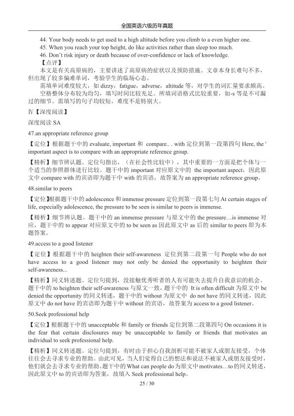
全国英语六级历年真题
25 / 30
44. Your body needs to get used to a high altitude before you climb to a even higher one.
45. When you reach your top height, do like activities rather than sleep too much.
46. Don’t risk injury or death because of over-confidence or lack of knowledge.
【点评】
本文是有关高原病的，主要讲述了高原病的症状以及预防措施。文章本身长难句不多，
但出现了较多偏难单词，考验学生的临场心态。
需填单词难度较大，如dizzy，fatigue，adverse，altitude 等，对学生的词汇量要求颇高。
空格整体分布较为均匀，填写时间比较充足。所填词语格式比较重要，如-s 等是不可漏
过的细节。需填写的句子均较短，难度不是特别大。
Ⅳ【深度阅读】
深度阅读SA
47.an appropriate reference group
【定位】根据题干中的evaluate, important 和compare.. . with 定位到第一段第四句Here, the '
important aspect is to compare with an appropriate reference group.
【精析】细节辨认题。定位句指出，（在社会性比较中），其中重要的一方面是把个体与一
个适当的参照群体进行比较。题干中的important 对应原文中的the important aspect，因此原
文中compare with 的宾语即为题干中with 的宾语，故答案为an appropriate reference group。
48.similar to peers
【定位】根据题干中的adolescence 和immense pressure 定位到第一段第七句At certain stages of
life, especially adolescence, the pressure to be seen is similar to peers is immense.
【精析】细节辨认题。题干中的an immense pressure 与原文中的the pressure…is immense 对
应，题干中的to appear 对应原文中的to be seen as 因此原文中as 后的similar to peers 即为本
题答案。
49.access to a good listener
【定位】根据题干中的heighten their self-awareness 定位到第二段第一句People who do not
have access to a good listener may not only be denied the opportunity to heighten their
self-awareness...
【精析】同义转述题。定位句提到，没接触优秀听者的人有可能失去提升自我意识的机会。
题干中的to heighten their self-awareness 与原文一致，题干中的It is often difficult 为原文中be
denied the opportunity 的同义转述，题干中的without 为原文中do not have 的同义转述，因此
原文中do not have 的宾语即为题干中without 的宾语，故答案为access to a good listener。
50.Seek professional help
【定位】根据题干中的unacceptable 和family or friends 定位到第二段第四句On occasions it is
the fear that certain disclosures may be unacceptable to family or friends that motivates an
individual to seek professional help.
【精析】同义转述题。定位句提到，有时由于担心自我剖析可能不被家人或朋友接受，个体
往往会去寻求专业的帮助。由此可见，当人们觉得自己的想法和说法不被家人或朋友接受时，
他们就会去寻求专业的帮助。题干中的What can people do为原文中motivates…to的同义转述，
因此原文中to 的宾语即为答案，故填入Seek professional help。
查看 / 复制本页文字
全国英语六级历年真题 25 / 30 44. Your body needs to get used to a high altitude before you climb to a even higher one. 45. When you reach your top height, do like activities rather than sleep too much. 46. Don’t risk injury or death because of over-confidence or lack of knowledge. 【点评】 本文是有关高原病的，主要讲述了高原病的症状以及预防措施。文章本身长难句不多， 但出现了较多偏难单词，考验学生的临场心态。 需填单词难度较大，如dizzy，fatigue，adverse，altitude 等，对学生的词汇量要求颇高。 空格整体分布较为均匀，填写时间比较充足。所填词语格式比较重要，如-s 等是不可漏 过的细节。需填写的句子均较短，难度不是特别大。 Ⅳ【深度阅读】 深度阅读SA 47.an appropriate reference group 【定位】根据题干中的evaluate, important 和compare.. . with 定位到第一段第四句Here, the ' important aspect is to compare with an appropriate reference group. 【精析】细节辨认题。定位句指出，（在社会性比较中），其中重要的一方面是把个体与一 个适当的参照群体进行比较。题干中的important 对应原文中的the important aspect，因此原 文中compare with 的宾语即为题干中with 的宾语，故答案为an appropriate reference group。 48.similar to peers 【定位】根据题干中的adolescence 和immense pressure 定位到第一段第七句At certain stages of life, especially adolescence, the pressure to be seen is similar to peers is immense. 【精析】细节辨认题。题干中的an immense pressure 与原文中的the pressure…is immense 对 应，题干中的to appear 对应原文中的to be seen as 因此原文中as 后的similar to peers 即为本 题答案。 49.access to a good listener 【定位】根据题干中的heighten their self-awareness 定位到第二段第一句People who do not have access to a good listener may not only be denied the opportunity to heighten their self-awareness... 【精析】同义转述题。定位句提到，没接触优秀听者的人有可能失去提升自我意识的机会。 题干中的to heighten their self-awareness 与原文一致，题干中的It is often difficult 为原文中be denied the opportunity 的同义转述，题干中的without 为原文中do not have 的同义转述，因此 原文中do not have 的宾语即为题干中without 的宾语，故答案为access to a good listener。 50.Seek professional help 【定位】根据题干中的unacceptable 和family or friends 定位到第二段第四句On occasions it is the fear that certain disclosures may be unacceptable to family or friends that motivates an individual to seek professional help. 【精析】同义转述题。定位句提到，有时由于担心自我剖析可能不被家人或朋友接受，个体 往往会去寻求专业的帮助。由此可见，当人们觉得自己的想法和说法不被家人或朋友接受时， 他们就会去寻求专业的帮助。题干中的What can people do为原文中motivates…to的同义转述， 因此原文中to 的宾语即为答案，故填入Seek professional help。
第 26 / 30 页
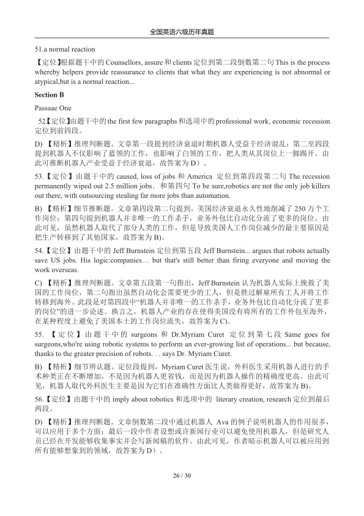
全国英语六级历年真题
26 / 30
51.a normal reaction
【定位】根据题干中的Counsellors, assure 和clients 定位到第二段倒数第二句This is the process
whereby helpers provide reassurance to clients that what they are experiencing is not abnormal or
atypical,but is a normal reaction...
Section B
Passaae One
52.【定位】由题干中的the first few paragraphs和选项中的professional work, economic recession
定位到前四段。
D) 【精析】推理判断题。文章第一段提到经济衰退时期机器人受益于经济混乱；第二至四段
提到机器人不仅影响了蓝领的工作，也影响了白领的工作，把人类从其岗位上一脚踢开。由
此可推断机器人产业受益于经济衰退，故答案为D）。
53.【定位】由题干中的caused, loss of jobs 和America 定位到第四段第二句The recession
permanently wiped out 2.5 million jobs．和第四句To be sure,robotics are not the only job killers
out there, with outsourcing stealing far more jobs than automation.
B) 【精析】细节推断题。文章第四段第二句提到，美国经济衰退永久性地削减了250 万个工
作岗位；第四句提到机器人并非唯一的工作杀手，业务外包比自动化分流了更多的岗位。由
此可见，虽然机器人取代了部分人类的工作，但是导致美国人工作岗位减少的最主要原因是
把生产转移到了其他国家，故答案为B)。
54.【定位】由题干中的Jeff Burnstein 定位到第五段Jeff Burnstein... argues that robots actually
save US jobs. His logic:companies… but that's still better than firing everyone and moving the
work overseas.
C) 【精析】推理判断题。文章第五段第一句指出，Jeff Burnstein 认为机器人实际上挽救了美
国的工作岗位，第二句指出虽然自动化会需要更少的工人，但是胜过解雇所有工人并将工作
转移到海外。此段是对第四段中“机器人并非唯一的工作杀手，业务外包比自动化分流了更多
的岗位”的进一步论述。换言之，机器人产业的存在使得美国没有将所有的工作外包至海外，
在某种程度上避免了美国本土的工作岗位流失，故答案为C)。
55. 【定位】由题干中的surgeons 和Dr.Myriam Curet 定位到第七段Same goes for
surgeons,who're using robotic systems to perform an ever-growing list of operations... but because,
thanks to the greater precision of robots. . . says Dr. Myriam Curet.
B) 【精析】细节辨认题。定位段提到，Myriam Curet 医生说，外科医生采用机器人进行的手
术种类正在不断增加，不是因为机器人更省钱，而是因为机器人操作的精确度更高。由此可
见，机器人取代外科医生主要是因为它们在准确性方面比人类做得更好，故答案为B)。
56.【定位】由题干中的imply about robotics 和选项中的literary creation, research 定位到最后
两段。
D) 【精析】推理判断题。文章倒数第二段中通过机器人Ava 的例子说明机器人的作用很多，
可以应用于多个方面；最后一段中作者设想或许新闻行业可以避免使用机器人，但是研究人
员已经在开发能够收集事实并会写新闻稿的软件。由此可见，作者暗示机器人可以被应用到
所有能够想象到的领域，故答案为D）。
查看 / 复制本页文字
全国英语六级历年真题 26 / 30 51.a normal reaction 【定位】根据题干中的Counsellors, assure 和clients 定位到第二段倒数第二句This is the process whereby helpers provide reassurance to clients that what they are experiencing is not abnormal or atypical,but is a normal reaction... Section B Passaae One 52.【定位】由题干中的the first few paragraphs和选项中的professional work, economic recession 定位到前四段。 D) 【精析】推理判断题。文章第一段提到经济衰退时期机器人受益于经济混乱；第二至四段 提到机器人不仅影响了蓝领的工作，也影响了白领的工作，把人类从其岗位上一脚踢开。由 此可推断机器人产业受益于经济衰退，故答案为D）。 53.【定位】由题干中的caused, loss of jobs 和America 定位到第四段第二句The recession permanently wiped out 2.5 million jobs．和第四句To be sure,robotics are not the only job killers out there, with outsourcing stealing far more jobs than automation. B) 【精析】细节推断题。文章第四段第二句提到，美国经济衰退永久性地削减了250 万个工 作岗位；第四句提到机器人并非唯一的工作杀手，业务外包比自动化分流了更多的岗位。由 此可见，虽然机器人取代了部分人类的工作，但是导致美国人工作岗位减少的最主要原因是 把生产转移到了其他国家，故答案为B)。 54.【定位】由题干中的Jeff Burnstein 定位到第五段Jeff Burnstein... argues that robots actually save US jobs. His logic:companies… but that's still better than firing everyone and moving the work overseas. C) 【精析】推理判断题。文章第五段第一句指出，Jeff Burnstein 认为机器人实际上挽救了美 国的工作岗位，第二句指出虽然自动化会需要更少的工人，但是胜过解雇所有工人并将工作 转移到海外。此段是对第四段中“机器人并非唯一的工作杀手，业务外包比自动化分流了更多 的岗位”的进一步论述。换言之，机器人产业的存在使得美国没有将所有的工作外包至海外， 在某种程度上避免了美国本土的工作岗位流失，故答案为C)。 55. 【定位】由题干中的surgeons 和Dr.Myriam Curet 定位到第七段Same goes for surgeons,who're using robotic systems to perform an ever-growing list of operations... but because, thanks to the greater precision of robots. . . says Dr. Myriam Curet. B) 【精析】细节辨认题。定位段提到，Myriam Curet 医生说，外科医生采用机器人进行的手 术种类正在不断增加，不是因为机器人更省钱，而是因为机器人操作的精确度更高。由此可 见，机器人取代外科医生主要是因为它们在准确性方面比人类做得更好，故答案为B)。 56.【定位】由题干中的imply about robotics 和选项中的literary creation, research 定位到最后 两段。 D) 【精析】推理判断题。文章倒数第二段中通过机器人Ava 的例子说明机器人的作用很多， 可以应用于多个方面；最后一段中作者设想或许新闻行业可以避免使用机器人，但是研究人 员已经在开发能够收集事实并会写新闻稿的软件。由此可见，作者暗示机器人可以被应用到 所有能够想象到的领域，故答案为D）。
第 27 / 30 页
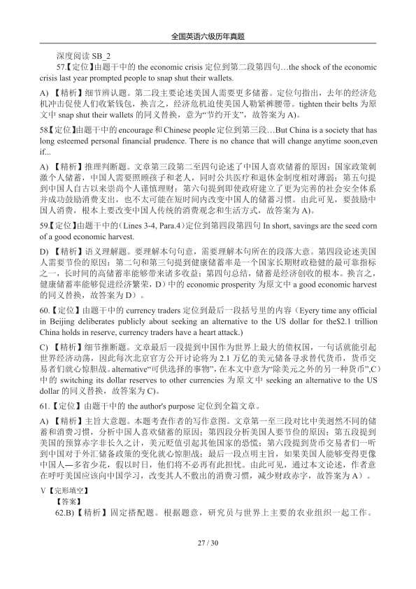
全国英语六级历年真题
27 / 30
深度阅读SB_2
57.【定位】由题干中的the economic crisis 定位到第二段第四句…the shock of the economic
crisis last year prompted people to snap shut their wallets.
A) 【精析】细节辨认题。第二段主要论述美国人需要更多储蓄。定位句指出，去年的经济危
机冲击促使人们收紧钱包，换言之，经济危机迫使美国人勒紧裤腰带。tighten their belts 为原
文中snap shut their wallets 的同义替换，意为“节约开支”，故答案为A)。
58.【定位】由题干中的encourage和Chinese people定位到第三段…But China is a society that has
long esteemed personal financial prudence. There is no chance that will change anytime soon,even
if...
A) 【精析】推理判断题。文章第三段第二至四句论述了中国人喜欢储蓄的原因：国家政策刺
激个人储蓄，中国人需要照顾孩子和老人，同时公共医疗和退休金制度相对薄弱；第五句提
到中国人自古以来崇尚个人谨慎理财；第六句提到即使政府建立了更为完善的社会安全体系
并成功鼓励消费支出，也不太可能在短时间内改变中国人的储蓄习惯。由此可见，要鼓励中
国人消费，根本上要改变中国人传统的消费观念和生活方式，故答案为A)。
59.【定位】由题干中的（Lines 3-4, Para.4）定位到第四段第四句In short, savings are the seed corn
of a good economic harvest.
D) 【精析】语义理解题。要理解本句句意，需要理解本句所在的段落大意。第四段论述美国
人需要节俭的原因：第二句和第三句提到健康储蓄率是一个国家长期财政稳健的最可靠指标
之一，长时间的高储蓄率能够带来诸多收益；第四句总结，储蓄是经济创收的根本。换言之，
健康储蓄率能够促进经济繁荣，D）中的economic prosperity 为原文中a good economic harvest
的同义替换，故答案为D）。
60.【定位】由题干中的currency traders 定位到最后一段括号里的内容（Eyery time any official
in Beijing deliberates publicly about seeking an alternative to the US dollar for the$2.1 trillion
China holds in reserve, currency traders have a heart attack.)
C) 【精析】细节推断题。文章最后一段提到中国作为世界上最大的债权国，一句话就能引起
世界经济动荡，因此每次北京官方公开讨论将为2.1 万亿的美元储备寻求替代货币，货币交
易者们就心惊胆战。alternative“可供选择的事物”，在本文中意为“除美元之外的另一种货币”,C）
中的switching its dollar reserves to other currencies 为原文中seeking an alternative to the US
dollar 的同义替换，故答案为C)。
61.【定位】由题干中的the author's purpose 定位到全篇文章。
A) 【精析】主旨大意题。本题考查作者的写作意图。文章第一至三段对比中美迥然不同的储
蓄和消费习惯，分析中国人喜欢储蓄的原因；第四段分析美国人要节俭的原因；第五段提到
美国的预算赤字非长久之计，美元贬值引起其他国家的恐慌；第六段提到货币交易者们一听
到中国对于外汇储备政策的变化就心惊胆战；最后一段点明主旨，如果美国人能够变得更像
中国人―多省少花，假以时日，他们将不必再有此担忧。由此可见，通过本文论述，作者意
在呼吁美国应该向中国学习，改变其人不敷出的消费习惯，减少财政赤字，故答案为A）。
Ⅴ【完形填空】
【答案】
62.B)【精析】固定搭配题。根据题意，研究员与世界上主要的农业组织一起工作。
查看 / 复制本页文字
全国英语六级历年真题 27 / 30 深度阅读SB_2 57.【定位】由题干中的the economic crisis 定位到第二段第四句…the shock of the economic crisis last year prompted people to snap shut their wallets. A) 【精析】细节辨认题。第二段主要论述美国人需要更多储蓄。定位句指出，去年的经济危 机冲击促使人们收紧钱包，换言之，经济危机迫使美国人勒紧裤腰带。tighten their belts 为原 文中snap shut their wallets 的同义替换，意为“节约开支”，故答案为A)。 58.【定位】由题干中的encourage和Chinese people定位到第三段…But China is a society that has long esteemed personal financial prudence. There is no chance that will change anytime soon,even if... A) 【精析】推理判断题。文章第三段第二至四句论述了中国人喜欢储蓄的原因：国家政策刺 激个人储蓄，中国人需要照顾孩子和老人，同时公共医疗和退休金制度相对薄弱；第五句提 到中国人自古以来崇尚个人谨慎理财；第六句提到即使政府建立了更为完善的社会安全体系 并成功鼓励消费支出，也不太可能在短时间内改变中国人的储蓄习惯。由此可见，要鼓励中 国人消费，根本上要改变中国人传统的消费观念和生活方式，故答案为A)。 59.【定位】由题干中的（Lines 3-4, Para.4）定位到第四段第四句In short, savings are the seed corn of a good economic harvest. D) 【精析】语义理解题。要理解本句句意，需要理解本句所在的段落大意。第四段论述美国 人需要节俭的原因：第二句和第三句提到健康储蓄率是一个国家长期财政稳健的最可靠指标 之一，长时间的高储蓄率能够带来诸多收益；第四句总结，储蓄是经济创收的根本。换言之， 健康储蓄率能够促进经济繁荣，D）中的economic prosperity 为原文中a good economic harvest 的同义替换，故答案为D）。 60.【定位】由题干中的currency traders 定位到最后一段括号里的内容（Eyery time any official in Beijing deliberates publicly about seeking an alternative to the US dollar for the$2.1 trillion China holds in reserve, currency traders have a heart attack.) C) 【精析】细节推断题。文章最后一段提到中国作为世界上最大的债权国，一句话就能引起 世界经济动荡，因此每次北京官方公开讨论将为2.1 万亿的美元储备寻求替代货币，货币交 易者们就心惊胆战。alternative“可供选择的事物”，在本文中意为“除美元之外的另一种货币”,C） 中的switching its dollar reserves to other currencies 为原文中seeking an alternative to the US dollar 的同义替换，故答案为C)。 61.【定位】由题干中的the author's purpose 定位到全篇文章。 A) 【精析】主旨大意题。本题考查作者的写作意图。文章第一至三段对比中美迥然不同的储 蓄和消费习惯，分析中国人喜欢储蓄的原因；第四段分析美国人要节俭的原因；第五段提到 美国的预算赤字非长久之计，美元贬值引起其他国家的恐慌；第六段提到货币交易者们一听 到中国对于外汇储备政策的变化就心惊胆战；最后一段点明主旨，如果美国人能够变得更像 中国人―多省少花，假以时日，他们将不必再有此担忧。由此可见，通过本文论述，作者意 在呼吁美国应该向中国学习，改变其人不敷出的消费习惯，减少财政赤字，故答案为A）。 Ⅴ【完形填空】 【答案】 62.B)【精析】固定搭配题。根据题意，研究员与世界上主要的农业组织一起工作。
第 28 / 30 页
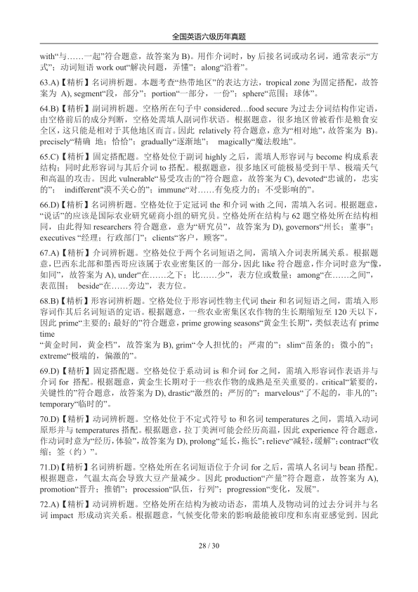
全国英语六级历年真题
28 / 30
with“与……一起”符合题意，故答案为B)。用作介词时，by 后接名词或动名词，通常表示“方
式”；动词短语work out“解决问题，弄懂”；along“沿着”。
63.A)【精析】名词辨析题。本题考查“热带地区”的表达方法，tropical zone 为固定搭配，故答
案为A), segment“段，部分”；portion“一部分，一份”；sphere“范围；球体”。
64.B)【精析】副词辨析题。空格所在句子中considered…food secure 为过去分词结构作定语，
由空格前后的成分判断，空格处需填人副词作状语。根据题意，很多地区曾被看作是粮食安
全区，这只能是相对于其他地区而言。因此relatively 符合题意，意为“相对地”，故答案为B)。
precisely“精确地；恰恰”；gradually“逐渐地”；magically“魔法般地”。
65.C)【精析】固定搭配题。空格处位于副词highly 之后，需填人形容词与become 构成系表
结构；同时此形容词与其后介词to 搭配。根据题意，很多地区可能极易受到干旱、极端夭气
和高温的攻击。因此vulnerable“易受攻击的”符合题意，故答案为C), devoted“忠诚的，忠实
的”；indifferent"漠不关心的”；immune“对……有免疫力的；不受影响的”。
66.D)【精析】名词辨析题。空格处位于定冠词the 和介词with 之间，需填入名词。根据题意，
“说话”的应该是国际农业研究磋商小组的研究员。空格处所在结构与62 题空格处所在结构相
同，由此得知researchers 符合题意，意为“研究员”，故答案为D), governors“州长；董事”；
executives “经理；行政部门”；clients“客户，顾客”。
67.A)【精析】介词辨析题。空格处位于两个名词短语之间，需填入介词表所属关系。根据题
意，巴西东北部和墨西哥应该属于农业密集区的一部分，因此like 符合题意，作介词时意为“像，
如同”，故答案为A), under“在……之下；比……少”，表方位或数量；among“在……之间”，
表范围；beside“在……旁边”，表方位。
68.B)【精析】形容词辨析题。空格处位于形容词性物主代词their 和名词短语之间，需填入形
容词作其后名词短语的定语。根据题意，一些农业密集区农作物的生长期缩短至120 天以下，
因此prime“主要的；最好的”符合题意，prime growing seasons“黄金生长期”，类似表达有prime
time
“黄金时间，黄金档”，故答案为B), grim“令人担忧的；严肃的”；slim“苗条的；微小的”；
extreme“极端的，偏激的”。
69.D)【精析】固定搭配题。空格处位于系动词is 和介词for 之间，需填入形容词作表语并与
介词for 搭配。根据题意，黄金生长期对于一些农作物的成熟是至关重要的。critical“紧要的，
关键性的”符合题意，故答案为D), drastic“激烈的；严厉的”；marvelous“了不起的，非凡的”；
temporary“临时的”。
70.D)【精析】动词辨析题。空格处位于不定式符号to 和名词temperatures 之间，需填入动词
原形并与temperatures 搭配。根据题意，拉丁美洲可能会经历高温，因此experience 符合题意，
作动词时意为“经历，体验”，故答案为D), prolong“延长，拖长”；relieve“减轻，缓解”；contract“收
缩；签（约）”。
71.D)【精析】名词辨析题。空格处所在名词短语位于介词for 之后，需填人名词与bean 搭配。
根据题意，气温太高会导致大豆产量减少。因此production“产量”符合题意，故答案为A),
promotion“晋升；推销”；procession“队伍，行列”；progression“变化，发展”。
72.A)【精析】动词辨析题。空格处所在结构为被动语态，需填人及物动词的过去分词并与名
词impact 形成动宾关系。根据题意，气候变化带来的影响最能被印度和东南亚感觉到。因此
查看 / 复制本页文字
全国英语六级历年真题 28 / 30 with“与……一起”符合题意，故答案为B)。用作介词时，by 后接名词或动名词，通常表示“方 式”；动词短语work out“解决问题，弄懂”；along“沿着”。 63.A)【精析】名词辨析题。本题考查“热带地区”的表达方法，tropical zone 为固定搭配，故答 案为A), segment“段，部分”；portion“一部分，一份”；sphere“范围；球体”。 64.B)【精析】副词辨析题。空格所在句子中considered…food secure 为过去分词结构作定语， 由空格前后的成分判断，空格处需填人副词作状语。根据题意，很多地区曾被看作是粮食安 全区，这只能是相对于其他地区而言。因此relatively 符合题意，意为“相对地”，故答案为B)。 precisely“精确地；恰恰”；gradually“逐渐地”；magically“魔法般地”。 65.C)【精析】固定搭配题。空格处位于副词highly 之后，需填人形容词与become 构成系表 结构；同时此形容词与其后介词to 搭配。根据题意，很多地区可能极易受到干旱、极端夭气 和高温的攻击。因此vulnerable“易受攻击的”符合题意，故答案为C), devoted“忠诚的，忠实 的”；indifferent"漠不关心的”；immune“对……有免疫力的；不受影响的”。 66.D)【精析】名词辨析题。空格处位于定冠词the 和介词with 之间，需填入名词。根据题意， “说话”的应该是国际农业研究磋商小组的研究员。空格处所在结构与62 题空格处所在结构相 同，由此得知researchers 符合题意，意为“研究员”，故答案为D), governors“州长；董事”； executives “经理；行政部门”；clients“客户，顾客”。 67.A)【精析】介词辨析题。空格处位于两个名词短语之间，需填入介词表所属关系。根据题 意，巴西东北部和墨西哥应该属于农业密集区的一部分，因此like 符合题意，作介词时意为“像， 如同”，故答案为A), under“在……之下；比……少”，表方位或数量；among“在……之间”， 表范围；beside“在……旁边”，表方位。 68.B)【精析】形容词辨析题。空格处位于形容词性物主代词their 和名词短语之间，需填入形 容词作其后名词短语的定语。根据题意，一些农业密集区农作物的生长期缩短至120 天以下， 因此prime“主要的；最好的”符合题意，prime growing seasons“黄金生长期”，类似表达有prime time “黄金时间，黄金档”，故答案为B), grim“令人担忧的；严肃的”；slim“苗条的；微小的”； extreme“极端的，偏激的”。 69.D)【精析】固定搭配题。空格处位于系动词is 和介词for 之间，需填入形容词作表语并与 介词for 搭配。根据题意，黄金生长期对于一些农作物的成熟是至关重要的。critical“紧要的， 关键性的”符合题意，故答案为D), drastic“激烈的；严厉的”；marvelous“了不起的，非凡的”； temporary“临时的”。 70.D)【精析】动词辨析题。空格处位于不定式符号to 和名词temperatures 之间，需填入动词 原形并与temperatures 搭配。根据题意，拉丁美洲可能会经历高温，因此experience 符合题意， 作动词时意为“经历，体验”，故答案为D), prolong“延长，拖长”；relieve“减轻，缓解”；contract“收 缩；签（约）”。 71.D)【精析】名词辨析题。空格处所在名词短语位于介词for 之后，需填人名词与bean 搭配。 根据题意，气温太高会导致大豆产量减少。因此production“产量”符合题意，故答案为A), promotion“晋升；推销”；procession“队伍，行列”；progression“变化，发展”。 72.A)【精析】动词辨析题。空格处所在结构为被动语态，需填人及物动词的过去分词并与名 词impact 形成动宾关系。根据题意，气候变化带来的影响最能被印度和东南亚感觉到。因此
第 29 / 30 页
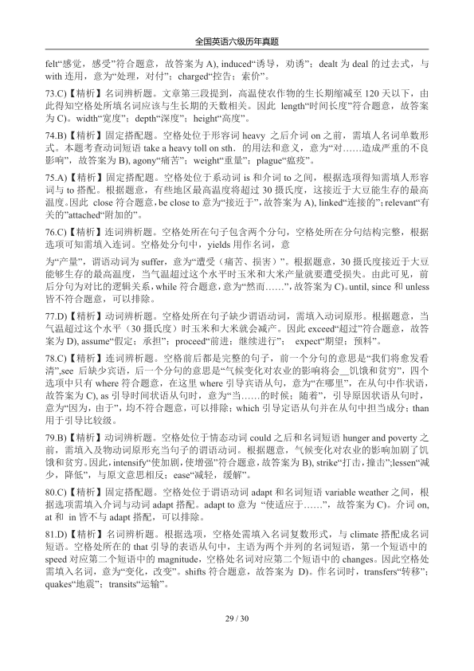
全国英语六级历年真题
29 / 30
felt“感觉，感受”符合题意，故答案为A), induced“诱导，劝诱”；dealt 为deal 的过去式，与
with 连用，意为“处理，对付”；charged“控告；索价”。
73.C)【精析】名词辨析题。文章第三段提到，高温使农作物的生长期缩减至120 天以下，由
此得知空格处所填名词应该与生长期的天数相关。因此length“时间长度”符合题意，故答案
为C)。width“宽度”；depth“深度”；height“高度”。
74.B)【精析】固定搭配题。空格处位于形容词heavy 之后介词on 之前，需填人名词单数形
式。本题考查动词短语take a heavy toll on sth．的用法和意义，意为“对……造成严重的不良
影响”，故答案为B), agony“痛苦”；weight“重量”；plague“瘟疫”。
75.A)【精析】固定搭配题。空格处位于系动词is 和介词to 之间，根据选项得知需填人形容
词与to 搭配。根据题意，有些地区最高温度将超过30 摄氏度，这接近于大豆能生存的最高
温度。因此close 符合题意，be close to 意为“接近于”，故答案为A), linked“连接的”；relevant“有
关的”attached“附加的”。
76.C)【精析】连词辨析题。空格处所在句子包含两个分句，空格处所在分句结构完整，根据
选项可知需填入连词。空格处分句中，yields 用作名词，意
为“产量”，谓语动词为suffer，意为“遭受（痛苦、损害）”。根据题意，30 摄氏度接近于大豆
能够生存的最高温度，当气温超过这个水平时玉米和大米产量就要遭受损失。由此可见，前
后分句为对比的逻辑关系，while 符合题意，意为“然而……”，故答案为C)。until, since 和unless
皆不符合题意，可以排除。
77.D)【精析】动词辨析题。空格处所在句子缺少谓语动词，需填入动词原形。根据题意，当
气温超过这个水平（30 摄氏度）时玉米和大米就会减产。因此exceed“超过”符合题意，故答
案为D), assume“假定；承担”；proceed“前进；继续进行”；expect“期望；预料”。
78.C)【精析】连词辨析题。空格前后都是完整的句子，前一个分句的意思是“我们将愈发看
清”,see 后缺少宾语，后一个分句的意思是“气候变化对农业的影响将会＿饥饿和贫穷”，四个
选项中只有where 符合题意，在这里where 引导宾语从句，意为“在哪里”，在从句中作状语，
故答案为C), as 引导时间状语从句时，意为“当……的时候；随着”，引导原因状语从句时，
意为“因为，由于”，均不符合题意，可以排除；which 引导定语从句并在从句中担当成分；than
用于引导比较级。
79.B)【精析】动词辨析题。空格处位于情态动词could 之后和名词短语hunger and poverty 之
前，需填入及物动词原形充当句子的谓语动词。根据题意，气候变化对农业的影响加剧了饥
饿和贫穷。因此，intensify“使加剧，使增强”符合题意，故答案为B), strike“打击，撞击”;lessen“减
少，降低”，与原文意思相反；ease“减轻，缓解”。
80.C)【精析】固定搭配题。空格处位于谓语动词adapt 和名词短语variable weather 之间，根
据选项需填入介词与动词adapt 搭配。adapt to 意为“使适应于……”，故答案为C)。介词on,
at 和in 皆不与adapt 搭配，可以排除。
81.D)【精析】名词辨析题。根据选项，空格处需填入名词复数形式，与climate 搭配成名词
短语。空格处所在的that 引导的表语从句中，主语为两个并列的名词短语，第一个短语中的
speed 对应第二个短语中的magnitude，空格处名词对应第二个短语中的changes。因此空格处
需填入名词，意为“变化，改变”。shifts 符合题意，故答案为D)。作名词时，transfers“转移”；
quakes“地震”；transits“运输”。
查看 / 复制本页文字
全国英语六级历年真题 29 / 30 felt“感觉，感受”符合题意，故答案为A), induced“诱导，劝诱”；dealt 为deal 的过去式，与 with 连用，意为“处理，对付”；charged“控告；索价”。 73.C)【精析】名词辨析题。文章第三段提到，高温使农作物的生长期缩减至120 天以下，由 此得知空格处所填名词应该与生长期的天数相关。因此length“时间长度”符合题意，故答案 为C)。width“宽度”；depth“深度”；height“高度”。 74.B)【精析】固定搭配题。空格处位于形容词heavy 之后介词on 之前，需填人名词单数形 式。本题考查动词短语take a heavy toll on sth．的用法和意义，意为“对……造成严重的不良 影响”，故答案为B), agony“痛苦”；weight“重量”；plague“瘟疫”。 75.A)【精析】固定搭配题。空格处位于系动词is 和介词to 之间，根据选项得知需填人形容 词与to 搭配。根据题意，有些地区最高温度将超过30 摄氏度，这接近于大豆能生存的最高 温度。因此close 符合题意，be close to 意为“接近于”，故答案为A), linked“连接的”；relevant“有 关的”attached“附加的”。 76.C)【精析】连词辨析题。空格处所在句子包含两个分句，空格处所在分句结构完整，根据 选项可知需填入连词。空格处分句中，yields 用作名词，意 为“产量”，谓语动词为suffer，意为“遭受（痛苦、损害）”。根据题意，30 摄氏度接近于大豆 能够生存的最高温度，当气温超过这个水平时玉米和大米产量就要遭受损失。由此可见，前 后分句为对比的逻辑关系，while 符合题意，意为“然而……”，故答案为C)。until, since 和unless 皆不符合题意，可以排除。 77.D)【精析】动词辨析题。空格处所在句子缺少谓语动词，需填入动词原形。根据题意，当 气温超过这个水平（30 摄氏度）时玉米和大米就会减产。因此exceed“超过”符合题意，故答 案为D), assume“假定；承担”；proceed“前进；继续进行”；expect“期望；预料”。 78.C)【精析】连词辨析题。空格前后都是完整的句子，前一个分句的意思是“我们将愈发看 清”,see 后缺少宾语，后一个分句的意思是“气候变化对农业的影响将会＿饥饿和贫穷”，四个 选项中只有where 符合题意，在这里where 引导宾语从句，意为“在哪里”，在从句中作状语， 故答案为C), as 引导时间状语从句时，意为“当……的时候；随着”，引导原因状语从句时， 意为“因为，由于”，均不符合题意，可以排除；which 引导定语从句并在从句中担当成分；than 用于引导比较级。 79.B)【精析】动词辨析题。空格处位于情态动词could 之后和名词短语hunger and poverty 之 前，需填入及物动词原形充当句子的谓语动词。根据题意，气候变化对农业的影响加剧了饥 饿和贫穷。因此，intensify“使加剧，使增强”符合题意，故答案为B), strike“打击，撞击”;lessen“减 少，降低”，与原文意思相反；ease“减轻，缓解”。 80.C)【精析】固定搭配题。空格处位于谓语动词adapt 和名词短语variable weather 之间，根 据选项需填入介词与动词adapt 搭配。adapt to 意为“使适应于……”，故答案为C)。介词on, at 和in 皆不与adapt 搭配，可以排除。 81.D)【精析】名词辨析题。根据选项，空格处需填入名词复数形式，与climate 搭配成名词 短语。空格处所在的that 引导的表语从句中，主语为两个并列的名词短语，第一个短语中的 speed 对应第二个短语中的magnitude，空格处名词对应第二个短语中的changes。因此空格处 需填入名词，意为“变化，改变”。shifts 符合题意，故答案为D)。作名词时，transfers“转移”； quakes“地震”；transits“运输”。
第 30 / 30 页
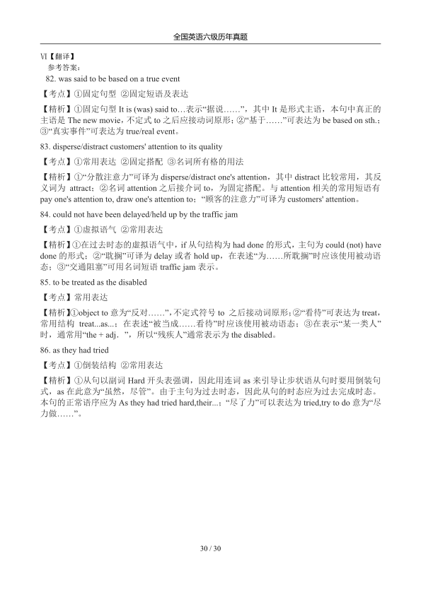
全国英语六级历年真题
30 / 30
Ⅵ【翻译】
参考答案：
82. was said to be based on a true event
【考点】①固定句型②固定短语及表达
【精析】①固定句型It is (was) said to…表示“据说……”，其中It 是形式主语，本句中真正的
主语是The new movie，不定式to 之后应接动词原形；②“基于……”可表达为be based on sth.；
③“真实事件”可表达为true/real event。
83. disperse/distract customers' attention to its quality
【考点】①常用表达②固定搭配③名词所有格的用法
【精析】①“分散注意力”可译为disperse/distract one's attention，其中distract 比较常用，其反
义词为attract；②名词attention 之后接介词to，为固定搭配。与attention 相关的常用短语有
pay one's attention to, draw one's attention to；“顾客的注意力”可译为customers' attention。
84. could not have been delayed/held up by the traffic jam
【考点】①虚拟语气②常用表达
【精析】①在过去时态的虚拟语气中，if 从句结构为had done 的形式，主句为could (not) have
done 的形式；②“耽搁”可译为delay 或者hold up，在表述“为……所耽搁”时应该使用被动语
态；③“交通阻塞”可用名词短语traffic jam 表示。
85. to be treated as the disabled
【考点】常用表达
【精析】①object to 意为“反对……”，不定式符号to 之后接动词原形；②“看待”可表达为treat，
常用结构treat...as...；在表述“被当成……看待”时应该使用被动语态；③在表示“某一类人”
时，通常用“the + adj．”，所以“残疾人”通常表示为the disabled。
86. as they had tried
【考点】①倒装结构②常用表达
【精析】①从句以副词Hard 开头表强调，因此用连词as 来引导让步状语从句时要用倒装句
式，as 在此意为“虽然，尽管”。由于主句为过去时态，因此从句的时态应为过去完成时态。
本句的正常语序应为As they had tried hard,their...；“尽了力”可以表达为tried,try to do 意为“尽
力做……”。
查看 / 复制本页文字
全国英语六级历年真题 30 / 30 Ⅵ【翻译】 参考答案： 82. was said to be based on a true event 【考点】①固定句型②固定短语及表达 【精析】①固定句型It is (was) said to…表示“据说……”，其中It 是形式主语，本句中真正的 主语是The new movie，不定式to 之后应接动词原形；②“基于……”可表达为be based on sth.； ③“真实事件”可表达为true/real event。 83. disperse/distract customers' attention to its quality 【考点】①常用表达②固定搭配③名词所有格的用法 【精析】①“分散注意力”可译为disperse/distract one's attention，其中distract 比较常用，其反 义词为attract；②名词attention 之后接介词to，为固定搭配。与attention 相关的常用短语有 pay one's attention to, draw one's attention to；“顾客的注意力”可译为customers' attention。 84. could not have been delayed/held up by the traffic jam 【考点】①虚拟语气②常用表达 【精析】①在过去时态的虚拟语气中，if 从句结构为had done 的形式，主句为could (not) have done 的形式；②“耽搁”可译为delay 或者hold up，在表述“为……所耽搁”时应该使用被动语 态；③“交通阻塞”可用名词短语traffic jam 表示。 85. to be treated as the disabled 【考点】常用表达 【精析】①object to 意为“反对……”，不定式符号to 之后接动词原形；②“看待”可表达为treat， 常用结构treat...as...；在表述“被当成……看待”时应该使用被动语态；③在表示“某一类人” 时，通常用“the + adj．”，所以“残疾人”通常表示为the disabled。 86. as they had tried 【考点】①倒装结构②常用表达 【精析】①从句以副词Hard 开头表强调，因此用连词as 来引导让步状语从句时要用倒装句 式，as 在此意为“虽然，尽管”。由于主句为过去时态，因此从句的时态应为过去完成时态。 本句的正常语序应为As they had tried hard,their...；“尽了力”可以表达为tried,try to do 意为“尽 力做……”。